Generated Captions
Image test_1: একজন নারী একটি শিশু কোলে নিয়ে আছে।
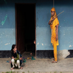Image test_2: একজন নারী ও একজন পুরুষ দাড়িয়ে আছে।
Image test_3: একজন পুরুষ দাড়িয়ে আছে।
Image test_4: একজন পুরুষ আছে।
Image test_5: একজন নারী ও একজন পুরুষ আছে।
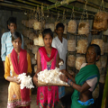Image test_6: কয়েকজন মানুষ আছে।
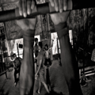Image test_7: একজন পুরুষ বসে আছে।
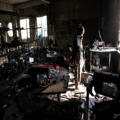Image test_8: একজন নারী একটি শিশু কোলে নিয়ে আছে।
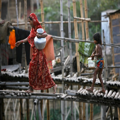Image test_9: অনেকগুলো মানুষ আছে। অনেকগুলো আছে। অনেকগুলো
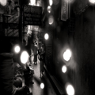Image test_10: একজন নারী বসে আছে।
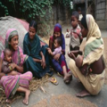Image test_11: একজন পুরুষ বসে আছে।
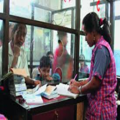Image test_12: একজন নারী ও একজন পুরুষ আছে।
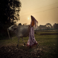Image test_13: একটি শিশু আছে।
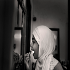Image test_14: একজন মানুষ দাড়িয়ে আছে।
Image test_15: একজন পুরুষ বসে আছে। একজন
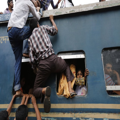Image test_16: কয়েকজন মানুষ আছে।
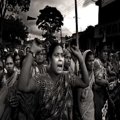Image test_17: একজন নারী একটি শিশু কোলে নিয়ে আছে।
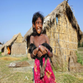Image test_18: একজন মহিলা একটি বাচ্চাকে কোলে নিয়ে দাড়িয়ে
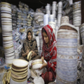Image test_19: সমুদ্রের পারে অনেকগুলো মানুষ দাড়িয়ে আছে।
Image test_20: একজন নারী আছে। একটি
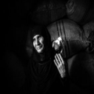Image test_21: একটি নৌকায় একজন মানুষ আছে। নৌকা
Image test_22: একজন পুরুষ আছে।
Image test_23: অনেকগুলো মানুষ আছে। অনেকগুলো দাড়িয়ে অনেকগুলো
Image test_24: একজন নারী ও একজন পুরুষ দাড়িয়ে আছে।
Image test_25: একটি শিশু তাকিয়ে আছে। আছে।
Image test_26: অনেকগুলো মানুষ আছে।
Image test_27: কয়েকজন মানুষ আছে।
Image test_28: অনেকগুলো পুরুষ পাশাপাশি দাড়িয়ে আছে। অনেকগুলো
Image test_29: সরিষা ক্ষেতের মাঝ দিয়ে একজন মানুষ হেঁটে
Image test_30: সমুদ্রের পারে একজন মানুষ দাড়িয়ে আছে।
Image test_31: কয়েকজন মানুষ বসে আছে।
Image test_32: সরিষা ক্ষেতের মাঝে একজন নারী ও একটি
Image test_33: পানিতে কয়েকজন মানুষ আছে।
Image test_34: একজন নারী ও একজন পুরুষ আছে।
Image test_35: একজন নারী ও একজন পুরুষ আছে।
Image test_36: একজন পুরুষ দাড়িয়ে আছে। একজন একজন
Image test_37: একজন নারী ও একজন পুরুষ দাড়িয়ে আছে।
Image test_38: অনেকগুলো মানুষ আছে। অনেকগুলো দাড়িয়ে
Image test_39: একজন নারী ও একজন পুরুষ আছে।
Image test_40: একটি শিশু আছে।
Image test_41: একজন পুরুষ বসে আছে। একটি
Image test_42: একজন পুরুষ মাথায় বোঝা নিয়ে হেঁটে যাচ্ছে।
Image test_43: একজন নারী একটি শিশু কোলে নিয়ে আছে।
Image test_44: একজন পুরুষ মাথায় বোঝা নিয়ে হেঁটে যাচ্ছে।
Image test_45: একজন পুরুষ বসে আছে।
Image test_46: একটি শিশু আছে।
Image test_47: অনেকগুলো পুরুষ ও শিশু আছে। আছে।
Image test_48: একটি শিশু আছে।
Image test_49: একজন নারী ও একজন পুরুষ আছে।
Image test_50: একজন নারী ও একজন পুরুষ আছে।
Image test_51: একজন পুরুষ দাড়িয়ে আছে।
Image test_52: কয়েকজন মানুষ আছে।
Image test_53: একটি শিশু আছে।
Image test_54: একজন নারী ও একজন পুরুষ আছে।
Image test_55: একজন নারী একটি শিশু কোলে নিয়ে আছে।
Image test_56: একজন নারী ও একজন পুরুষ আছে।
Image test_57: একজন নারী ও একজন পুরুষ আছে।
Image test_58: একজন পুরুষ বসে আছে। একজন
Image test_59: একটি শিশু বসে আছে।
Image test_60: একজন পুরুষ ও একজন নারী দাড়িয়ে আছে।
Image test_61: একজন নারী ও একজন পুরুষ আছে।
Image test_62: একজন নারী ও একজন পুরুষ আছে।
Image test_63: কয়েকজন পুরুষ ও একজন নারী আছে।
Image test_64: একজন নারী ও একজন পুরুষ আছে।
Image test_65: একটি শিশু আছে।
Image test_66: কয়েকজন মানুষ আছে।
Image test_67: একটি কুকুর শুয়ে আছে। একটি
Image test_68: একজন নারী একটি শিশু কোলে নিয়ে আছে।
Image test_69: একজন পুরুষ একটি শিশু কোলে নিয়ে আছে।
Image test_70: কয়েকজন মানুষ আছে।
Image test_71: একজন নারী ও একজন পুরুষ আছে।
Image test_72: কয়েকজন পুরুষ দাড়িয়ে আছে।
Image test_73: একজন পুরুষ ও একজন নারী আছে।
Image test_74: একজন পুরুষ দাড়িয়ে আছে। একজন
Image test_75: একজন নারী আছে।
Image test_76: একটি
Image test_77: একজন নারী ও একজন পুরুষ বসে আছে।
Image test_78: একজন পুরুষ বসে আছে।
Image test_79: কয়েকজন মানুষ আছে।
Image test_80: একটি নৌকায় একজন মানুষ আছে।
Image test_81: কয়েকজন পুরুষ দাড়িয়ে আছে।
Image test_82: একটি শিশু আছে।
Image test_83: একটি ছেলে ও একটি মেয়ে দাড়িয়ে আছে।
Image test_84: একজন নারী বসে আছে।
Image test_85: একজন নারী ও একজন পুরুষ আছে।
Image test_86: কয়েকজন মানুষ আছে।
Image test_87: একজন নারী ও একজন পুরুষ আছে।
Image test_88: একজন পুরুষ ও একজন নারী বসে আছে।
Image test_89: একজন নারী ও একজন পুরুষ আছে।
Image test_90: একজন পুরুষ হেঁটে যাচ্ছে। গরু গরু
Image test_91: একজন পুরুষ বসে আছে।
Image test_92: অনেকগুলো পুরুষ পাশাপাশি দাড়িয়ে আছে। অনেকগুলো
Image test_93: একজন নারী ও একজন পুরুষ আছে।
Image test_94: একজন পুরুষ ও একজন নারী আছে।
Image test_95: কয়েকজন পুরুষ বসে আছে।
Image test_96: একজন নারী বসে আছে। একজন একজন
Image test_97: একজন পুরুষ ও একজন নারী হেঁটে যাচ্ছে।
Image test_98: কয়েকজন নারী ও একজন পুরুষ আছে।
Image test_99: একজন পুরুষ ও একজন নারী আছে।
Image test_100: একজন নারী বসে আছে। একজন একজন
Image test_101: কয়েকজন নারী ও শিশু আছে। দাড়িয়ে
Image test_102: একটি শিশু আছে।
Image test_103: কয়েকজন পুরুষ ও একজন নারী দাড়িয়ে আছে।
Image test_104: কয়েকজন পুরুষ ও অনেকগুলো নারী দাড়িয়ে আছে।
Image test_105: একজন নারী তাকিয়ে আছে।
Image test_106: কয়েকজন নারী ও পুরুষ আছে। অনেকগুলো
Image test_107: একজন নারী ও একজন পুরুষ আছে।
Image test_108: একজন নারী ও একটি শিশু আছে।
Image test_109: একজন নারী ও একজন পুরুষ আছে।
Image test_110: একজন নারী তাকিয়ে আছে।
Image test_111: একজন পুরুষ বসে আছে।
Image test_112: একজন পুরুষ তাকিয়ে আছে। একজন
Image test_113: একটি শিশু আছে।
Image test_114: একজন নারী ও একজন পুরুষ আছে।
Image test_115: একজন পুরুষ ও একজন নারী বসে আছে।
Image test_116: একজন পুরুষ বসে আছে।
Image test_117: একজন পুরুষ দাড়িয়ে আছে।
Image test_118: একজন পুরুষ বসে আছে।
Image test_119: একজন নারী বসে আছে।
Image test_120: একজন নারী ও একজন পুরুষ আছে।
Image test_121: একজন পুরুষ দাড়িয়ে আছে।
Image test_122: একজন পুরুষ হেঁটে আসছে।
Image test_123: একটি শিশু আছে।
Image test_124: একটি নৌকায় একজন মানুষ আছে।
Image test_125: সমুদ্রের পারে কয়েকজন মানুষ আছে। দাড়িয়ে
Image test_126: একজন নারী ও একজন পুরুষ আছে।
Image test_127: একজন নারী বসে আছে। বসে বসে
Image test_128: একজন পুরুষ বসে আছে। অনেকগুলো অনেকগুলো
Image test_129: একজন পুরুষ বসে আছে।
Image test_130: কয়েকজন পুরুষ দাড়িয়ে আছে।
Image test_131: কয়েকজন মানুষ আছে।
Image test_132: একজন নারী ও একজন পুরুষ আছে।
Image test_133: একজন নারী একটি শিশু কোলে নিয়ে আছে।
Image test_134: অনেকগুলো মানুষ আছে। গরু গরু গরু
Image test_135: তিনজন নারী ও একজন পুরুষ পাশাপাশি দাড়িয়ে
Image test_136: একটি নৌকায় একজন মানুষ আছে।
Image test_137: কয়েকজন পুরুষ দাড়িয়ে আছে।
Image test_138: একজন পুরুষ আছে।
Image test_139: একজন পুরুষ দাড়িয়ে আছে।
Image test_140: একজন পুরুষ বসে আছে।
Image test_141: একজন পুরুষ আছে।
Image test_142: একজন নারী ও একজন পুরুষ আছে।
Image test_143: একজন নারী দাড়িয়ে আছে।
Image test_144: কয়েকজন মানুষ আছে।
Image test_145: একজন নারী ও একজন পুরুষ আছে।
Image test_146: একটি শিশু আছে।
Image test_147: পানিতে একজন পুরুষ আছে।
Image test_148: একজন নারী ও একজন পুরুষ আছে।
Image test_149: একজন পুরুষ বসে আছে।
Image test_150: একজন নারী ও একজন পুরুষ দাড়িয়ে আছে।
Image test_151: একজন পুরুষ বসে আছে।
Image test_152: অনেকগুলো শিশু বসে আছে। বসে বসে
Image test_153: একজন পুরুষ ও একজন নারী আছে।
Image test_154: একজন নারী ও একজন পুরুষ দাড়িয়ে আছে।
Image test_155: একজন নারী একটি শিশু কোলে নিয়ে আছে।
Image test_156: একজন পুরুষ তাকিয়ে আছে।
Image test_157: অনেকগুলো মানুষ আছে।
Image test_158: একটি শিশু আছে।
Image test_159: কয়েকজন নারী ও পুরুষ দাড়িয়ে আছে।
Image test_160: একজন নারী একটি শিশু কোলে নিয়ে আছে।
Image test_161: একজন পুরুষ বসে আছে।
Image test_162: কয়েকজন মানুষ আছে।
Image test_163: কয়েকজন পুরুষ ও কয়েকজন নারী আছে।
Image test_164: একটি শিশু আছে।
Image test_165: একজন নারী বসে আছে। একটি বসে
Image test_166: একজন নারী বসে আছে। বসে কাজ
Image test_167: কয়েকজন মানুষ আছে।
Image test_168: একজন নারী ও একজন পুরুষ দাড়িয়ে আছে।
Image test_169: একজন পুরুষ দাড়িয়ে আছে।
Image test_170: একজন নারী ও একজন পুরুষ আছে।
Image test_171: একজন পুরুষ বসে আছে।
Image test_172: একজন বয়স্ক পুরুষ বসে আছে। একজন
Image test_173: একজন পুরুষ দাড়িয়ে আছে।
Image test_174: একজন নারী দাড়িয়ে আছে।
Image test_175: অনেকগুলো মানুষ দাড়িয়ে আছে। অনেকগুলো অনেকগুলো
Image test_176: অনেকগুলো পুরুষ বসে আছে।
Image test_177: একজন নারী ও একজন পুরুষ আছে।
Image test_178: অনেকগুলো মানুষ আছে।
Image test_179: একটি নৌকায় একজন মানুষ আছে। আছে।
Image test_180: একটি শিশু দাড়িয়ে আছে।
Image test_181: একজন পুরুষ ও একজন নারী আছে।
Image test_182: একজন পুরুষ ও একজন নারী আছে।
Image test_183: একজন পুরুষ ও একজন নারী হেঁটে যাচ্ছে।
Image test_184: একজন পুরুষ দাড়িয়ে আছে।
Image test_185: একজন ছোট ছেলে বসে খাবার খাচ্ছে।
Image test_186: একজন পুরুষ বসে আছে। একটি
Image test_187: একজন নারী আছে।
Image test_188: একজন নারী বসে আছে।
Image test_189: একজন নারী আছে।
Image test_190: একজন নারী ও একজন পুরুষ আছে।
Image test_191: একটি শিশু আছে।
Image test_192: একজন পুরুষ দাড়িয়ে আছে। একজন একজন
Image test_193: একজন নারী ও একজন পুরুষ আছে।
Image test_194: একজন নারী বসে আছে। একজন একজন
Image test_195: একজন নারী ও একজন পুরুষ আছে।
Image test_196: একজন পুরুষ ও একজন নারী দাড়িয়ে আছে।
Image test_197: একজন নারী ও একজন পুরুষ আছে।
Image test_198: একজন পুরুষ সাইকেল চালাচ্ছে।
Image test_199: একজন পুরুষ দাড়িয়ে আছে।
Image test_200: একজন নারী ও একজন পুরুষ দাড়িয়ে আছে।
Image test_201: একজন পুরুষ ও একজন নারী আছে।
Image test_202: একজন পুরুষ বসে আছে।
Image test_203: কয়েকজন পুরুষ ও একজন নারী দাড়িয়ে আছে।
Image test_204: একজন নারী ও একজন পুরুষ দাড়িয়ে আছে।
Image test_205: একটি শিশু বসে আছে।
Image test_206: কয়েকজন মানুষ বসে আছে।
Image test_207: একজন পুরুষ কাজ করছে। একজন একজন
Image test_208: একটি শিশু আছে।
Image test_209: একজন পুরুষ তাকিয়ে আছে।
Image test_210: অনেকগুলো পুরুষ দাড়িয়ে আছে।
Image test_211: একজন পুরুষ দাড়িয়ে আছে।
Image test_212: একজন পুরুষ বসে আছে। একটি
Image test_213: একজন বয়স্ক পুরুষ তাকিয়ে আছে।
Image test_214: একটি শিশু আছে।
Image test_215: একজন নারী বসে আছে।
Image test_216: একজন পুরুষ ও একজন নারী আছে।
Image test_217: একজন পুরুষ বসে আছে।
Image test_218: অনেকগুলো মানুষ আছে।
Image test_219: একজন পুরুষ বসে আছে। একটি বসে
Image test_220: একজন পুরুষ ও একজন নারী আছে।
Image test_221: একজন পুরুষ ও একজন নারী বসে আছে।
Image test_222: একজন নারী ও একজন পুরুষ আছে।
Image test_223: একজন পুরুষ ও একজন নারী বসে আছে।
Image test_224: একজন পুরুষ ও একজন নারী আছে।
Image test_225: একজন পুরুষ দাড়িয়ে আছে।
Image test_226: একজন পুরুষ দাড়িয়ে আছে। একজন একজন
Image test_227: একজন নারী ও একজন পুরুষ আছে।
Image test_228: একজন নারী মাথায় গামছা বেধে আছে।
Image test_229: অনেকগুলো পুরুষ ও পুরুষ বসে আছে।
Image test_230: একজন পুরুষ বসে আছে।
Image test_231: একজন পুরুষ তাকিয়ে আছে।
Image test_232: একজন নারী দাড়িয়ে আছে।
Image test_233: একজন পুরুষ ও একজন নারী দাড়িয়ে আছে।
Image test_234: একজন পুরুষ দাড়িয়ে আছে। একজন
Image test_235: একজন নারী ও একজন পুরুষ দাড়িয়ে আছে।
Image test_236: একজন পুরুষ বসে আছে।
Image test_237: একজন পুরুষ ও একজন নারী বসে আছে।
Image test_238: একজন পুরুষ ও একজন নারী আছে।
Image test_239: একটি শিশু আছে। দাড়িয়ে দাড়িয়ে
Image test_240: একজন নারী ও একজন পুরুষ দাড়িয়ে আছে।
Image test_241: একজন মানুষ হেঁটে যাচ্ছে।
Image test_242: একজন পুরুষ দাড়িয়ে আছে। একজন একজন
Image test_243: কয়েকজন পুরুষ দাড়িয়ে আছে।
Image test_244: একজন নারী ও একজন পুরুষ আছে।
Image test_245: একজন নারী বসে আছে।
Image test_246: অনেকগুলো মানুষ দাড়িয়ে আছে। অনেকগুলো
Image test_247: একটি নৌকায় একজন মানুষ আছে।
Image test_248: একজন নারী ও একজন পুরুষ দাড়িয়ে আছে।
Image test_249: অনেকগুলো মানুষ বসে আছে।
Image test_250: একজন পুরুষ ও একজন নারী আছে।
Image test_251: একজন পুরুষ বসে আছে। একজন একজন
Image test_252: একজন নারী আছে।
Image test_253: একজন নারী বসে আছে।
Image test_254: একজন পুরুষ ও একজন নারী আছে।
Image test_255: একজন নারী ও একজন পুরুষ দাড়িয়ে আছে।
Image test_256: একজন পুরুষ সাইকেল চালিয়ে যাচ্ছে। একজন
Image test_257: একটি শিশু বসে আছে।
Image test_258: একজন পুরুষ বসে আছে।
Image test_259: একজন নারী মাথায় বোঝা নিয়ে আছে।
Image test_260: একজন নারী একটি শিশু কোলে নিয়ে আছে।
Image test_261: একজন পুরুষ বসে আছে। একজন একজন
Image test_262: একজন পুরুষ আছে।
Image test_263: কয়েকজন ছেলে মেয়ে একসাথে দাড়িয়ে আছে আর
Image test_264: একজন পুরুষ ও একজন নারী দাড়িয়ে আছে।
Image test_265: একজন পুরুষ বসে আছে। একজন একজন
Image test_266: একজন পুরুষ দাড়িয়ে আছে।
Image test_267: একজন পুরুষ ও একজন নারী আছে।
Image test_268: একজন পুরুষ ও একজন নারী আছে।
Image test_269: একটি শিশু আছে।
Image test_270: কয়েকজন নারী ও পুরুষ আছে। দাড়িয়ে
Image test_271: অনেকগুলো মানুষ দাড়িয়ে আছে।
Image test_272: একটি শিশু আছে।
Image test_273: একজন নারী ও একজন পুরুষ আছে।
Image test_274: একজন পুরুষ ও একজন নারী দাড়িয়ে আছে।
Image test_275: একজন নারী ও একজন পুরুষ দাড়িয়ে আছে।
Image test_276: অনেকগুলো মানুষ আছে। অনেকগুলো
Image test_277: একজন পুরুষ আছে।
Image test_278: একজন পুরুষ ও একজন নারী বসে আছে।
Image test_279: একজন পুরুষ বসে আছে।
Image test_280: একজন পুরুষ আছে।
Image test_281: একজন পুরুষ দাড়িয়ে আছে।
Image test_282: একজন নারী বসে আছে।
Image test_283: কয়েকজন মানুষ আছে।
Image test_284: কয়েকজন মানুষ আছে।
Image test_285: একজন মানুষ দাড়িয়ে আছে।
Image test_286: একজন পুরুষ বসে আছে। একটি দাড়িয়ে
Image test_287: ৪ জন পুরুষ এবং ১ জন মহিলা
Image test_288: তিনজন নারী ও একজন পুরুষ আছে।
Image test_289: একজন পুরুষ ও একজন নারী আছে।
Image test_290: একজন পুরুষ ও একজন নারী আছে।
Image test_291: একজন পুরুষ সাইকেল চালিয়ে যাচ্ছে। একজন
Image test_292: একজন নারী ও একজন পুরুষ দাড়িয়ে আছে।
Image test_293: একজন নারী ও একজন পুরুষ আছে।
Image test_294: একজন পুরুষ সাইকেল চালাচ্ছে। একজন একজন
Image test_295: একটি শিশু আছে।
Image test_296: কয়েকজন নারী ও পুরুষ দাড়িয়ে আছে।
Image test_297: অনেকগুলো নারী ও অনেকগুলো পুরুষ আছে।
Image test_298: একজন নারী ও একজন পুরুষ আছে।
Image test_299: একটি শিশু আছে।
Image test_300: একজন বয়স্ক পুরুষ আছে।
Image test_301: একজন পুরুষ বসে আছে।
Image test_302: একটি শিশু আছে।
Image test_303: একজন মানুষ হেঁটে যাচ্ছে। রাস্তা সাইকেল
Image test_304: একজন পুরুষ তাকিয়ে আছে।
Image test_305: একটি শিশু আছে।
Image test_306: একজন নারী ও একজন পুরুষ আছে।
Image test_307: কয়েকজন মানুষ আছে।
Image test_308: একজন নারী ও একজন পুরুষ আছে।
Image test_309: একজন পুরুষ দাড়িয়ে আছে।
Image test_310: একটি শিশু আছে।
Image test_311: একজন নারী দাড়িয়ে আছে।
Image test_312: একজন পুরুষ ও একজন নারী বসে আছে।
Image test_313: একটি শিশু আছে।
Image test_314: একজন পুরুষ ও একজন নারী হেঁটে যাচ্ছে।
Image test_315: একজন পুরুষ দাড়িয়ে আছে।
Image test_316: কয়েকজন মানুষ আছে। অনেকগুলো আছে। অনেকগুলো
Image test_317: একজন পুরুষ বসে আছে। একজন
Image test_318: অনেকগুলো পুরুষ দাড়িয়ে আছে।
Image test_319: একজন পুরুষ বসে আছে।
Image test_320: একজন পুরুষ দাড়িয়ে আছে। দাড়িয়ে দাড়িয়ে
Image test_321: একজন পুরুষ বসে আছে।
Image test_322: একজন পুরুষ একটি গরু নিয়ে যাচ্ছে।
Image test_323: একটি শিশু আছে।
Image test_324: একটি শিশু আছে।
Image test_325: একজন পুরুষ ও একজন নারী দাড়িয়ে আছে।
Image test_326: অনেকগুলো মানুষ আছে।
Image test_327: অনেকগুলো মানুষ আছে। অনেকগুলো দাড়িয়ে অনেকগুলো
Image test_328: অনেকগুলো পুরুষ দাড়িয়ে আছে। অনেকগুলো দাড়িয়ে
Image test_329: একজন পুরুষ দাড়িয়ে আছে।
Image test_330: একজন পুরুষ আছে।
Image test_331: একজন পুরুষ ও একজন নারী দাড়িয়ে আছে।
Image test_332: একজন নারী ও একটি শিশু আছে।
Image test_333: কয়েকজন ছেলে মেয়ে একসাথে দাড়িয়ে আছে আর
Image test_334: একজন নারী ও একজন পুরুষ দাড়িয়ে আছে।
Image test_335: একজন পুরুষ আছে।
Image test_336: একজন পুরুষ দাড়িয়ে আছে।
Image test_337: একজন নারী ও একজন পুরুষ আছে।
Image test_338: একজন পুরুষ ও একজন নারী আছে।
Image test_339: একজন নারী একটি গরু নিয়ে হেঁটে যাচ্ছে।
Image test_340: একজন নারী ও একজন পুরুষ দাড়িয়ে আছে।
Image test_341: একজন পুরুষ দাড়িয়ে আছে।
Image test_342: একজন পুরুষ বসে আছে।
Image test_343: একজন মানুষ হেঁটে যাচ্ছে। উপরে উপরে
Image test_344: একটি শিশু আছে।
Image test_345: একজন পুরুষ আছে।
Image test_346: কয়েকজন পুরুষ দাড়িয়ে আছে।
Image test_347: একজন নারী ও একজন পুরুষ আছে।
Image test_348: একজন পুরুষ মাথায় গামছা বেধে আছে।
Image test_349: একটি শিশু আছে।
Image test_350: একজন পুরুষ বসে আছে।
Image test_351: একজন নারী একটি শিশু কোলে নিয়ে আছে।
Image test_352: একজন নারী ও একজন পুরুষ আছে।
Image test_353: একজন পুরুষ বসে আছে। একজন
Image test_354: একজন নারী ও একজন পুরুষ আছে।
Image test_355: একজন নারী বসে আছে।
Image test_356: একজন নারী ও একজন পুরুষ আছে।
Image test_357: একজন পুরুষ বসে আছে। একটি
Image test_358: একটি নৌকায় একজন মানুষ আছে। নৌকা
Image test_359: একজন পুরুষ বসে আছে। একজন একজন
Image test_360: একটি শিশু আছে।
Image test_361: একজন পুরুষ বসে আছে।
Image test_362: একজন নারী ও একজন পুরুষ আছে।
Image test_363: একজন নারী আছে।
Image test_364: একজন পুরুষ দাড়িয়ে আছে।
Image test_365: একজন পুরুষ বসে আছে।
Image test_366: অনেকগুলো নারী ও পুরুষ দাড়িয়ে আছে।
Image test_367: একজন নারী ও একজন পুরুষ আছে।
Image test_368: একজন পুরুষ তাকিয়ে আছে। একজন একজন
Image test_369: একজন পুরুষ পানিতে জাল ফেলছে।
Image test_370: একজন নারী দাড়িয়ে আছে।
Image test_371: একজন পুরুষ বসে আছে। একজন একজন
Image test_372: একটি শিশু আছে।
Image test_373: কয়েকজন পুরুষ ও একজন নারী আছে।
Image test_374: একজন নারী একটি শিশু কোলে নিয়ে আছে।
Image test_375: কয়েকজন পুরুষ ও একজন নারী দাড়িয়ে আছে।
Image test_376: একজন নারী ও একজন পুরুষ আছে।
Image test_377: একটি শিশু আছে।
Image test_378: একজন পুরুষ আছে।
Image test_379: একটি শিশু বসে আছে।
Image test_380: একটি নৌকায় কয়েকজন মানুষ আছে। আছে।
Image test_381: একটি শিশু দাড়িয়ে আছে।
Image test_382: একটি শিশু আছে।
Image test_383: একজন পুরুষ বসে আছে। অনেকগুলো নৌকা
Image test_384: একজন পুরুষ দাড়িয়ে আছে।
Image test_385: দুইজন পুরুষ ও একজন নারী দাড়িয়ে আছে।
Image test_386: একজন নারী ও একজন পুরুষ আছে।
Image test_387: একজন নারী আছে।
Image test_388: একজন পুরুষ একটি শিশু কোলে নিয়ে আছে।
Image test_389: অনেকগুলো নারী ও শিশু দাড়িয়ে আছে।
Image test_390: একজন পুরুষ ও একজন নারী দাড়িয়ে আছে।
Image test_391: একটি গাছের নিচে বসে আছে একজন পুরুষ
Image test_392: একজন পুরুষ দাড়িয়ে আছে।
Image test_393: একজন নারী ও একজন পুরুষ বসে আছে।
Image test_394: একজন নারী ও একজন পুরুষ আছে।
Image test_395: একজন নারী ও একজন পুরুষ আছে।
Image test_396: একজন পুরুষ হেঁটে যাচ্ছে। একজন একজন
Image test_397: একটি ছেলে সাইকেল চালিয়ে যাচ্ছে।
Image test_398: একজন পুরুষ দাড়িয়ে আছে। একজন একজন
Image test_399: একজন পুরুষ বসে আছে।
Image test_400: অনেকগুলো মানুষ আছে। অনেকগুলো অনেকগুলো আছে।
Image test_401: একজন পুরুষ বসে আছে। একজন
Image test_402: একজন মানুষ দাড়িয়ে আছে।
Image test_403: একটি নৌকায় একজন মানুষ আছে।
Image test_404: একজন নারী ও একজন পুরুষ আছে।
Image test_405: একজন পুরুষ দাড়িয়ে আছে। একজন একজন
Image test_406: অনেকগুলো পুরুষ ও অনেকগুলো নারী দাড়িয়ে আছে।
Image test_407: অনেকগুলো নারী ও অনেকগুলো পুরুষ আছে।
Image test_408: একজন নারী ও একজন পুরুষ আছে।
Image test_409: কয়েকজন মানুষ দেখা যাচ্ছে।
Image test_410: কয়েকজন মানুষ আছে।
Image test_411: একজন নারী আছে।
Image test_412: একজন নারী আছে।
Image test_413: একটি শিশু আছে।
Image test_414: একজন পুরুষ দাড়িয়ে আছে।
Image test_415: একজন পুরুষ ও একজন নারী দাড়িয়ে আছে।
Image test_416: কয়েকজন পুরুষ আছে।
Image test_417: একজন নারী বসে আছে। একটি বসে
Image test_418: একজন নারী ও একজন পুরুষ আছে।
Image test_419: একজন পুরুষ ও একজন নারী আছে।
Image test_420: অনেকগুলো পুরুষ দাড়িয়ে আছে। দাড়িয়ে অনেকগুলো
Image test_421: একটি গরু ও একটি গরু আছে।
Image test_422: একজন নারী ও একজন পুরুষ বসে আছে।
Image test_423: একজন পুরুষ বসে আছে। বসে বসে
Image test_424: একজন পুরুষ কাজ করছে। একজন একজন
Image test_425: অনেকগুলো মানুষ আছে। অনেকগুলো
Image test_426: একটি শিশু আছে।
Image test_427: একটি শিশু আছে।
Image test_428: একজন নারী একটি শিশু কোলে নিয়ে আছে।
Image test_429: একটি শিশু আছে।
Image test_430: একজন নারী ও একজন পুরুষ বসে আছে।
Image test_431: একটি শিশু আছে। নৌকা আছে।
Image test_432: একটি শিশু আছে।
Image test_433: একজন নারী আছে।
Image test_434: একজন নারী ও একজন পুরুষ আছে।
Image test_435: একজন নারী আছে।
Image test_436: একজন নারী ও একজন পুরুষ আছে।
Image test_437: একজন পুরুষ ও একজন নারী আছে।
Image test_438: একটি শিশু দাড়িয়ে আছে।
Image test_439: অনেকগুলো মানুষ আছে।
Image test_440: একজন পুরুষ দাড়িয়ে আছে।
Image test_441: একজন নারী ও একজন পুরুষ দাড়িয়ে আছে।
Image test_442: একজন পুরুষ ও একজন নারী হেঁটে যাচ্ছে।
Image test_443: একজন নারী দাড়িয়ে আছে।
Image test_444: একজন নারী একটি শিশু কোলে নিয়ে আছে।
Image test_445: একজন পুরুষ ও একজন নারী বসে আছে।
Image test_446: একজন পুরুষ বসে আছে। অনেকগুলো
Image test_447: একজন পুরুষ হেঁটে যাচ্ছে। একজন রাস্তা
Image test_448: একজন পুরুষ ও একজন নারী দাড়িয়ে আছে।
Image test_449: একজন নারী ও একজন পুরুষ পাশাপাশি দাড়িয়ে
Image test_450: একজন পুরুষ ও একজন নারী বসে আছে।
Image test_451: একজন নারী ও একজন পুরুষ আছে।
Image test_452: একজন পুরুষ ও একজন নারী আছে।
Image test_453: একজন পুরুষ দাড়িয়ে আছে। দেয়ালে দেয়ালে
Image test_454: একজন নারী ও একজন নারী দাড়িয়ে আছে।
Image test_455: একজন পুরুষ তাকিয়ে আছে।
Image test_456: একটি শিশু আছে।
Image test_457: একজন পুরুষ বসে আছে।
Image test_458: একটি নৌকায় একজন মানুষ আছে। আছে।
Image test_459: একজন পুরুষ ও একজন নারী বসে আছে।
Image test_460: একটি শিশু আছে।
Image test_461: কয়েকজন পুরুষ দাড়িয়ে আছে।
Image test_462: একজন পুরুষ মাথায় গামছা বেধে আছে।
Image test_463: একজন নারী ও একজন পুরুষ আছে।
Image test_464: একজন পুরুষ বসে আছে। একজন অনেকগুলো
Image test_465: একজন পুরুষ দাড়িয়ে আছে। একজন
Image test_466: একজন পুরুষ দাড়িয়ে আছে।
Image test_467: কয়েকজন নারী ও পুরুষ আছে। অনেকগুলো
Image test_468: কয়েকজন পুরুষ ও একজন নারী আছে।
Image test_469: একজন নারী ও একজন পুরুষ আছে।
Image test_470: একজন নারী আছে।
Image test_471: একজন নারী বসে আছে।
Image test_472: কয়েকজন মানুষ আছে।
Image test_473: একটি শিশু বসে আছে।
Image test_474: একজন নারী ও একজন পুরুষ আছে।
Image test_475: একজন পুরুষ ও একজন নারী দাড়িয়ে আছে।
Image test_476: কয়েকজন মানুষ আছে।
Image test_477: একজন পুরুষ দাড়িয়ে আছে।
Image test_478: একজন পুরুষ ও একজন নারী আছে।
Image test_479: একজন নারী ও একজন পুরুষ আছে।
Image test_480: একজন পুরুষ কাজ করছে। একজন
Image test_481: একটি শিশু আছে।
Image test_482: একটি শিশু আছে।
Image test_483: একটি শিশু আছে।
Image test_484: একজন নারী বসে আছে। বসে বসে
Image test_485: একজন পুরুষ দাড়িয়ে আছে।
Image test_486: একজন পুরুষ বসে আছে। একজন একজন
Image test_487: একজন পুরুষ ও একজন নারী বসে আছে।
Image test_488: একটি শিশু আছে।
Image test_489: একজন পুরুষ ও একজন নারী আছে।
Image test_490: একটি শিশু আছে।
Image test_491: একজন নারী একটি শিশু কোলে নিয়ে আছে।
Image test_492: একটি শিশু আছে।
Image test_493: কয়েকজন মানুষ আছে।
Image test_494: একজন নারী ও একজন পুরুষ বসে আছে।
Image test_495: কয়েকজন মানুষ আছে।
Image test_496: একজন নারী আছে।
Image test_497: একজন পুরুষ বসে আছে।
Image test_498: একজন পুরুষ আছে।
Image test_499: একজন নারী একটি শিশু কোলে নিয়ে আছে।
Image test_500: একজন নারী ও একজন পুরুষ আছে।
Image test_501: একজন পুরুষ বসে আছে।
Image test_502: একজন পুরুষ আছে।
Image test_503: একজন নারী ও একজন পুরুষ আছে।
Image test_504: একজন পুরুষ দাড়িয়ে আছে। একজন একজন
Image test_505: কয়েকজন মানুষ আছে।
Image test_506: একজন পুরুষ বসে আছে।
Image test_507: একজন নারী একটি শিশু কোলে নিয়ে আছে।
Image test_508: একজন নারী একটি শিশু কোলে নিয়ে আছে।
Image test_509: একজন নারী ও একজন নারী আছে।
Image test_510: একজন পুরুষ দাড়িয়ে আছে।
Image test_511: একজন পুরুষ বসে আছে। একটি
Image test_512: একজন বয়স্ক পুরুষ বসে আছে। একজন
Image test_513: একজন পুরুষ আছে।
Image test_514: কয়েকজন মানুষ দাড়িয়ে আছে। অনেকগুলো দাড়িয়ে
Image test_515: একটি শিশু আছে।
Image test_516: একটি শিশু আছে।
Image test_517: একজন নারী ও একজন পুরুষ আছে।
Image test_518: কয়েকজন মানুষ আছে।
Image test_519: অনেকগুলো মানুষ দাড়িয়ে আছে। দাড়িয়ে দাড়িয়ে
Image test_520: একজন পুরুষ ও একজন নারী হেঁটে যাচ্ছে।
Image test_521: একজন নারী ও একজন পুরুষ আছে।
Image test_522: একজন পুরুষ ও একজন নারী দাড়িয়ে আছে।
Image test_523: একজন নারী বসে আছে।
Image test_524: সমুদ্রের পারে অনেকগুলো মানুষ আছে। আছে।
Image test_525: একজন নারী তাকিয়ে আছে।
Image test_526: একজন নারী ও একজন পুরুষ আছে।
Image test_527: কয়েকজন ছেলে মেয়ে শিশু কোলে নিয়ে আছে।
Image test_528: একজন পুরুষ বসে আছে।
Image test_529: অনেকগুলো শিশু আছে।
Image test_530: একজন পুরুষ ও একজন নারী আছে।
Image test_531: একজন নারী দাড়িয়ে আছে।
Image test_532: কয়েকজন পুরুষ ও একজন নারী আছে।
Image test_533: কয়েকজন মানুষ আছে।
Image test_534: একটি শিশু আছে।
Image test_535: একজন পুরুষ দাড়িয়ে আছে।
Image test_536: নদীতে একটি নৌকা চলছে।
Image test_537: একজন নারী বসে আছে।
Image test_538: একজন নারী ও একজন পুরুষ আছে।
Image test_539: একজন পুরুষ তাকিয়ে আছে।
Image test_540: একটি শিশু বসে আছে।
Image test_541: একজন পুরুষ ও একজন নারী আছে।
Image test_542: একজন নারী ও একজন পুরুষ দাড়িয়ে আছে।
Image test_543: একটি শিশু আছে।
Image test_544: একটি শিশু আছে।
Image test_545: একজন পুরুষ বসে আছে।
Image test_546: একজন পুরুষ বসে আছে।
Image test_547: একজন নারী মাথায় গামছা বেধে আছে।
Image test_548: একজন পুরুষ বসে আছে। একটি দাড়িয়ে
Image test_549: কয়েকজন মানুষ আছে।
Image test_550: একজন নারী একটি শিশু কোলে নিয়ে আছে।
Image test_551: একজন পুরুষ মাথায় গামছা বেধে তাকিয়ে আছে।
Image test_552: একজন পুরুষ বসে আছে। অনেকগুলো
Image test_553: একজন পুরুষ বসে আছে। একজন একজন
Image test_554: একটি
Image test_555: একজন পুরুষ বসে আছে।
Image test_556: অনেকগুলো পুরুষ ও অনেকগুলো নারী বসে আছে।
Image test_557: একজন পুরুষ দাড়িয়ে আছে।
Image test_558: একজন পুরুষ ও একজন নারী হেঁটে যাচ্ছে।
Image test_559: একজন নারী আছে।
Image test_560: তিনজন পুরুষ বসে আছে। বসে বসে
Image test_561: কয়েকজন নারী ও শিশু আছে। দাড়িয়ে
Image test_562: অনেকগুলো মানুষ আছে। অনেকগুলো দাড়িয়ে
Image test_563: একজন পুরুষ দাড়িয়ে আছে। একজন
Image test_564: অনেকগুলো পুরুষ বসে আছে।
Image test_565: একজন মানুষ একটি গরু নিয়ে যাচ্ছে।
Image test_566: অনেকগুলো মানুষ আছে। অনেকগুলো দাড়িয়ে অনেকগুলো
Image test_567: একটি শিশু আছে।
Image test_568: একজন পুরুষ ও একজন নারী আছে।
Image test_569: একজন নারী বসে আছে।
Image test_570: অনেকগুলো পুরুষ পাশাপাশি দাড়িয়ে আছে। অনেকগুলো
Image test_571: একজন নারী ও একজন পুরুষ আছে।
Image test_572: একজন পুরুষ দাড়িয়ে আছে। একজন
Image test_573: একজন নারী ও একজন পুরুষ আছে।
Image test_574: একজন পুরুষ ও একজন নারী বসে আছে।
Image test_575: একটি কুকুর শুয়ে আছে।
Image test_576: একজন পুরুষ ও একজন নারী দাড়িয়ে আছে।
Image test_577: অনেকগুলো পুরুষ দাড়িয়ে আছে। অনেকগুলো
Image test_578: একজন পুরুষ ও একজন নারী বসে আছে।
Image test_579: একজন পুরুষ একটি শিশু কোলে নিয়ে আছে।
Image test_580: একটি শিশু আছে।
Image test_581: একজন পুরুষ বসে আছে। একজন
Image test_582: চারজন পুরুষ বসে আছে। একটি বসে
Image test_583: একজন নারী ও একজন পুরুষ আছে।
Image test_584: একজন পুরুষ বসে আছে।
Image test_585: অনেকগুলো পুরুষ দাড়িয়ে আছে।
Image test_586: একজন পুরুষ ও একজন নারী আছে।
Image test_587: একজন নারী একটি শিশু কোলে নিয়ে আছে।
Image test_588: কয়েকজন পুরুষ দাড়িয়ে আছে।
Image test_589: একজন নারী ও একজন পুরুষ বসে আছে।
Image test_590: একজন নারী বসে আছে।
Image test_591: একজন পুরুষ বসে আছে। একটি
Image test_592: একজন পুরুষ দাড়িয়ে আছে।
Image test_593: একজন নারী ও একজন পুরুষ আছে।
Image test_594: একজন পুরুষ ও একজন নারী আছে।
Image test_595: একজন নারী একটি শিশু কোলে নিয়ে আছে।
Image test_596: একজন নারী ও একজন পুরুষ আছে।
Image test_597: একজন পুরুষ ও একজন নারী আছে।
Image test_598: কয়েকজন ছেলে মেয়ে শিশু বসে আছে।
Image test_599: একজন পুরুষ বসে আছে। একটি
Image test_600: একজন নারী আছে।
Image test_601: একজন পুরুষ খালি শরীরে রঙ মেখে আছে।
Image test_602: একটি নৌকায় একজন মানুষ আছে। আছে।
Image test_603: একজন নারী ও একজন পুরুষ আছে।
Image test_604: কয়েকজন পুরুষ ও একজন নারী বসে আছে।
Image test_605: একজন পুরুষ ও একজন নারী আছে।
Image test_606: একটি শিশু আছে।
Image test_607: একজন নারী ও একজন পুরুষ আছে।
Image test_608: একজন নারী বসে আছে। একজন
Image test_609: একজন নারী আছে।
Image test_610: অনেকগুলো ভবন আছে। আছে।
Image test_611: একজন নারী ও একজন পুরুষ আছে।
Image test_612: একজন নারী বসে আছে। একটি দাড়িয়ে
Image test_613: একটি শিশু আছে।
Image test_614: সমুদ্রের পারে একজন মানুষ আছে। দাড়িয়ে
Image test_615: একজন পুরুষ ও একজন নারী বসে আছে।
Image test_616: একজন নারী ও একজন পুরুষ আছে।
Image test_617: একজন নারী ও একজন পুরুষ আছে।
Image test_618: একজন নারী ও একজন পুরুষ আছে।
Image test_619: কয়েকজন পুরুষ দাড়িয়ে আছে।
Image test_620: একজন পুরুষ দাড়িয়ে আছে।
Image test_621: অনেকগুলো পুরুষ বসে আছে।
Image test_622: অনেকগুলো মানুষ আছে। অনেকগুলো অনেকগুলো আছে।
Image test_623: অনেকগুলো নারী ও পুরুষ আছে। অনেকগুলো
Image test_624: একজন পুরুষ বসে আছে।
Image test_625: অনেকগুলো পুরুষ বসে আছে। অনেকগুলো দাড়িয়ে
Image test_626: একজন নারী ও একজন পুরুষ দাড়িয়ে আছে।
Image test_627: একজন নারী ও একজন পুরুষ আছে।
Image test_628: কয়েকজন মানুষ আছে।
Image test_629: একজন পুরুষ বসে আছে।
Image test_630: একজন পুরুষ দাড়িয়ে আছে।
Image test_631: একজন পুরুষ বসে আছে।
Image test_632: একজন পুরুষ দাড়িয়ে আছে।
Image test_633: একজন পুরুষ বসে আছে।
Image test_634: একজন নারী ও একজন পুরুষ আছে।
Image test_635: একটি নৌকায় একজন মানুষ আছে।
Image test_636: একজন নারী দাড়িয়ে আছে।
Image test_637: একজন পুরুষ বসে আছে। একটি
Image test_638: একজন নারী ও একজন পুরুষ আছে।
Image test_639: একজন নারী বসে আছে।
Image test_640: একজন নারী দাড়িয়ে আছে। একজন
Image test_641: অনেকগুলো মানুষ আছে। অনেকগুলো অনেকগুলো বসে
Image test_642: একজন পুরুষ ও একজন নারী আছে।
Image test_643: একজন নারী একটি শিশু কোলে নিয়ে আছে।
Image test_644: একটি শিশু আছে।
Image test_645: কয়েকজন পুরুষ আছে।
Image test_646: একটি শিশু আছে।
Image test_647: একজন পুরুষ সাইকেল চালাচ্ছে।
Image test_648: কয়েকজন মানুষ আছে। অনেকগুলো আছে। অনেকগুলো
Image test_649: একজন পুরুষ বসে আছে।
Image test_650: একজন পুরুষ ও একজন নারী আছে।
Image test_651: একজন পুরুষ ও একজন নারী আছে।
Image test_652: একটি মেয়ে শিশু আছে।
Image test_653: একজন নারী ও একজন পুরুষ বসে আছে।
Image test_654: একজন পুরুষ বসে আছে।
Image test_655: একটি শিশু বসে আছে।
Image test_656: একজন নারী বসে আছে।
Image test_657: একজন পুরুষ একটি গরু নিয়ে যাচ্ছে।
Image test_658: অনেকগুলো পুরুষ দাড়িয়ে আছে। অনেকগুলো দাড়িয়ে
Image test_659: একজন নারী ও একজন পুরুষ আছে।
Image test_660: একজন নারী ও একজন পুরুষ আছে।
Image test_661: অনেকগুলো পুরুষ ও অনেকগুলো নারী আছে।
Image test_662: কয়েকজন ছেলে একসাথে বসে আছে আর তার
Image test_663: একজন পুরুষ বসে আছে। একজন
Image test_664: একজন নারী আছে।
Image test_665: একটি শিশু আছে।
Image test_666: একটি নৌকায় একজন মানুষ আছে। আছে।
Image test_667: একজন নারী বসে আছে।
Image test_668: একজন পুরুষ দাড়িয়ে আছে। একটি
Image test_669: একজন পুরুষ আছে।
Image test_670: একজন নারী হেঁটে যাচ্ছে। সাইকেল সাইকেল
Image test_671: একজন নারী বসে আছে। দাড়িয়ে দাড়িয়ে
Image test_672: অনেকগুলো শিশু বসে আছে। বসে দাড়িয়ে
Image test_673: একজন পুরুষ ও একজন নারী আছে।
Image test_674: কয়েকজন মানুষ আছে।
Image test_675: অনেকগুলো পুরুষ ও অনেকগুলো নারী বসে আছে।
Image test_676: একজন নারী ও একজন পুরুষ আছে।
Image test_677: একজন নারী বসে আছে।
Image test_678: একটি শিশু বসে আছে। বসে বসে
Image test_679: একজন পুরুষ বসে আছে।
Image test_680: পানিতে একজন পুরুষ আছে।
Image test_681: একজন নারী ও একজন পুরুষ পাশাপাশি দাড়িয়ে
Image test_682: একজন নারী তাকিয়ে আছে।
Image test_683: অনেকগুলো শিশু আছে।
Image test_684: একজন নারী বসে আছে।
Image test_685: একজন নারী ও একজন পুরুষ আছে।
Image test_686: একজন নারী আছে।
Image test_687: একজন পুরুষ দাড়িয়ে আছে।
Image test_688: একজন নারী ও একজন পুরুষ আছে।
Image test_689: একজন নারী ও একজন পুরুষ আছে।
Image test_690: একজন পুরুষ বসে আছে। একটি
Image test_691: অনেকগুলো মানুষ আছে।
Image test_692: একজন পুরুষ সাইকেল চালিয়ে আসছে। সাইকেল
Image test_693: একজন নারী ও একটি শিশু আছে।
Image test_694: অনেকগুলো মানুষ আছে।
Image test_695: কয়েকজন ছেলে মেয়ে একসাথে দাড়িয়ে আছে আর
Image test_696: একজন পুরুষ বসে আছে।
Image test_697: একজন নারী ও একজন পুরুষ আছে।
Image test_698: কয়েকজন পুরুষ পাশাপাশি দাড়িয়ে আছে। অনেকগুলো
Image test_699: একজন নারী তাকিয়ে আছে।
Image test_700: একজন নারী ও একজন পুরুষ আছে।
Image test_701: একটি ফলের দোকানে বসে আছে একজন পুরুষ
Image test_702: একজন পুরুষ একটি শিশু কোলে নিয়ে আছে।
Image test_703: অনেকগুলো মানুষ দাড়িয়ে আছে।
Image test_704: একজন পুরুষ আছে।
Image test_705: কয়েকজন পুরুষ দাড়িয়ে আছে।
Image test_706: একজন নারী ও একজন পুরুষ আছে।
Image test_707: একজন পুরুষ বসে আছে। একজন একজন
Image test_708: একটি রাস্তা দিয়ে রিক্সা ও গাড়ি চলাচল
Image test_709: কয়েকজন নারী ও অনেকগুলো পুরুষ আছে।
Image test_710: একজন পুরুষ দাড়িয়ে আছে।
Image test_711: একজন নারী ও একজন পুরুষ আছে।
Image test_712: একজন নারী বসে আছে। বসে বসে
Image test_713: একজন পুরুষ একটি শিশু কোলে নিয়ে আছে।
Image test_714: একজন পুরুষ ও একজন নারী আছে।
Image test_715: একজন নারী দাড়িয়ে আছে। একজন
Image test_716: একজন নারী ও একজন পুরুষ আছে।
Image test_717: একজন নারী ও একজন পুরুষ আছে।
Image test_718: একজন নারী দাড়িয়ে আছে। একজন একজন
Image test_719: একজন পুরুষ বসে আছে। একটি
Image test_720: একজন নারী একটি শিশু কোলে নিয়ে আছে।
Image test_721: একজন পুরুষ ও একজন নারী হেঁটে যাচ্ছে।
Image test_722: একজন পুরুষ ও একজন নারী দাড়িয়ে আছে।
Image test_723: একজন নারী বসে আছে। একজন একজন
Image test_724: একটি শিশু আছে।
Image test_725: একজন পুরুষ ও একজন নারী আছে।
Image test_726: একটি শিশু আছে।
Image test_727: একজন পুরুষ ও একজন নারী দাড়িয়ে আছে।
Image test_728: কয়েকজন মানুষ আছে।
Image test_729: একজন পুরুষ ও একজন নারী দাড়িয়ে আছে।
Image test_730: একটি
Image test_731: একজন পুরুষ ও একজন নারী আছে।
Image test_732: একজন পুরুষ বসে আছে।
Image test_733: কয়েকজন মানুষ আছে।
Image test_734: একজন নারী একটি শিশু কোলে নিয়ে আছে।
Image test_735: একজন পুরুষ বসে আছে। একটি
Image test_736: একটি শিশু দাড়িয়ে আছে।
Image test_737: রাস্তা দিয়ে কয়েকজন মানুষ হেঁটে যাচ্ছে।
Image test_738: একজন পুরুষ ও একজন নারী দাড়িয়ে আছে।
Image test_739: একজন নারী ও একজন পুরুষ আছে।
Image test_740: একজন পুরুষ দাড়িয়ে আছে।
Image test_741: একজন পুরুষ ও একজন নারী আছে।
Image test_742: একজন নারী একটি শিশু কোলে নিয়ে আছে।
Image test_743: একজন ছোট মেয়ে একটি বাচ্চাকে কুলে নিয়ে
Image test_744: একজন নারী বসে আছে।
Image test_745: তিনজন পুরুষ পাশাপাশি দাড়িয়ে আছে। তিনজন
Image test_746: একজন পুরুষ বসে আছে।
Image test_747: একজন নারী একটি শিশু কোলে নিয়ে আছে।
Image test_748: একজন নারী দাড়িয়ে আছে। একজন
Image test_749: একজন নারী ও একজন পুরুষ আছে।
Image test_750: একটি শিশু আছে।
Image test_751: অনেকগুলো মানুষ আছে।
Image test_752: কয়েকজন পুরুষ ও একজন নারী আছে।
Image test_753: একজন নারী ও একজন পুরুষ দাড়িয়ে আছে।
Image test_754: একজন পুরুষ দাড়িয়ে আছে।
Image test_755: একজন নারী ও একজন পুরুষ আছে।
Image test_756: একজন পুরুষ সাইকেল চালিয়ে যাচ্ছে। সাইকেল
Image test_757: একজন পুরুষ দাড়িয়ে আছে।
Image test_758: কয়েকজন পুরুষ ও কয়েকজন নারী আছে।
Image test_759: একটি নৌকায় একজন মানুষ আছে।
Image test_760: একটি শিশু আছে।
Image test_761: একজন নারী ও একজন পুরুষ আছে।
Image test_762: ৪ জন ছেলে এবং ১ জন মেয়ে
Image test_763: একজন নারী আছে।
Image test_764: একজন পুরুষ দাড়িয়ে আছে।
Image test_765: একটি শিশু আছে।
Image test_766: একজন নারী ও একজন পুরুষ বসে আছে।
Image test_767: তিনজন পুরুষ বসে আছে।
Image test_768: একজন নারী বসে আছে।
Image test_769: একজন পুরুষ বসে আছে। একজন একজন
Image test_770: কয়েকজন মানুষ আছে।
Image test_771: একটি শিশু আছে।
Image test_772: একজন পুরুষ ও একজন নারী বসে আছে।
Image test_773: কয়েকজন পুরুষ ও কয়েকজন নারী বসে আছে।
Image test_774: একজন পুরুষ ও একজন নারী দাড়িয়ে আছে।
Image test_775: একজন পুরুষ ও একজন নারী দাড়িয়ে আছে।
Image test_776: একজন নারী ও একজন পুরুষ আছে।
Image test_777: কয়েকজন পুরুষ ও অনেকগুলো নারী আছে।
Image test_778: একটি শিশু আছে।
Image test_779: একজন পুরুষ পানিতে জাল নিয়ে আছে।
Image test_780: একটি নৌকায় একজন মানুষ আছে।
Image test_781: একটি শিশু বই পড়ছে। বসে আছে।
Image test_782: একজন নারী ও একজন পুরুষ আছে।
Image test_783: একজন পুরুষ তাকিয়ে আছে।
Image test_784: একটি শিশু আছে।
Image test_785: একজন পুরুষ ও একজন নারী বসে আছে।
Image test_786: একজন পুরুষ তাকিয়ে আছে।
Image test_787: একজন পুরুষ দাড়িয়ে আছে।
Image test_788: একজন নারী ও একটি শিশু আছে।
Image test_789: অনেকগুলো মানুষ দাড়িয়ে আছে। অনেকগুলো অনেকগুলো
Image test_790: একজন পুরুষ হেঁটে যাচ্ছে।
Image test_791: একটি শিশু আছে।
Image test_792: একজন পুরুষ তাকিয়ে আছে।
Image test_793: একজন পুরুষ আছে।
Image test_794: একজন নারী আছে।
Image test_795: একজন ছোট মেয়ে একটি শিশু কোলে নিয়ে
Image test_796: একজন পুরুষ বসে আছে।
Image test_797: একজন পুরুষ বসে আছে। একজন
Image test_798: একজন নারী ও একজন পুরুষ আছে।
Image test_799: একজন নারী দাড়িয়ে আছে।
Image test_800: একজন নারী একটি শিশু কোলে নিয়ে আছে।
Image test_801: একজন পুরুষ বসে আছে। একজন একজন
Image test_802: একজন পুরুষ বসে আছে।
Image test_803: একজন পুরুষ ও একজন নারী বসে আছে।
Image test_804: একজন পুরুষ বসে আছে। একজন
Image test_805: একজন পুরুষ দাড়িয়ে আছে।
Image test_806: একজন পুরুষ বসে আছে। একটি
Image test_807: একজন পুরুষ হেঁটে আসছে।
Image test_808: একজন নারী বসে আছে।
Image test_809: একজন নারী ও একজন পুরুষ আছে।
Image test_810: একটি শিশু আছে।
Image test_811: একটি শিশু আছে।
Image test_812: একটি শিশু আছে।
Image test_813: একজন পুরুষ বসে আছে।
Image test_814: কয়েকজন নারী ও পুরুষ বসে আছে।
Image test_815: একজন পুরুষ বসে আছে।
Image test_816: অনেকগুলো শিশু বসে আছে। বসে বসে
Image test_817: একটি শিশু আছে।
Image test_818: একটি শিশু আছে।
Image test_819: একজন পুরুষ বসে আছে।
Image test_820: একজন পুরুষ দাড়িয়ে আছে।
Image test_821: একটি শিশু বসে আছে।
Image test_822: একজন পুরুষ ও একজন নারী দাড়িয়ে আছে।
Image test_823: একজন নারী ও একজন পুরুষ আছে।
Image test_824: একজন নারী ও একজন পুরুষ আছে।
Image test_825: একজন পুরুষ আছে।
Image test_826: একজন পুরুষ বসে আছে। অনেকগুলো দাড়িয়ে
Image test_827: একজন নারী ও একজন পুরুষ বসে আছে।
Image test_828: একটি শিশু আছে।
Image test_829: একজন পুরুষ মাথায় বোঝা নিয়ে হেঁটে যাচ্ছে।
Image test_830: একজন পুরুষ বসে আছে।
Image test_831: একজন নারী আছে।
Image test_832: একজন নারী বসে আছে।
Image test_833: একটি শিশু বসে আছে। বসে বসে
Image test_834: একটি শিশু আছে।
Image test_835: একজন নারী ও একজন পুরুষ আছে।
Image test_836: কয়েকজন পুরুষ ও একজন নারী দাড়িয়ে আছে।
Image test_837: কয়েকজন মানুষ আছে।
Image test_838: একজন পুরুষ বসে আছে।
Image test_839: তিনজন পুরুষ ও একজন নারী আছে।
Image test_840: কয়েকজন নারী ও অনেকগুলো পুরুষ বসে আছে।
Image test_841: একজন পুরুষ দাড়িয়ে আছে।
Image test_842: একজন নারী ও একজন পুরুষ আছে।
Image test_843: একজন পুরুষ দাড়িয়ে আছে।
Image test_844: একজন পুরুষ বসে আছে।
Image test_845: কয়েকজন নারী ও শিশু আছে। আছে।
Image test_846: একজন পুরুষ আছে।
Image test_847: অনেকগুলো মানুষ আছে।
Image test_848: একজন নারী বসে আছে। একটি বসে
Image test_849: একজন পুরুষ বসে আছে।
Image test_850: একজন পুরুষ ও একজন নারী আছে।
Image test_851: একজন পুরুষ বসে আছে।
Image test_852: একজন নারী ও একজন পুরুষ আছে।
Image test_853: দুইজন পুরুষ দাড়িয়ে আছে।
Image test_854: একজন নারী বসে আছে। বসে বসে
Image test_855: একজন নারী বসে আছে। একজন একজন
Image test_856: একজন পুরুষ বসে আছে।
Image test_857: একজন পুরুষ বসে আছে। একজন
Image test_858: একজন পুরুষ দাড়িয়ে আছে।
Image test_859: একজন পুরুষ দাড়িয়ে আছে। একজন
Image test_860: একজন পুরুষ ও একজন নারী দাড়িয়ে আছে।
Image test_861: একজন নারী ও একজন পুরুষ আছে।
Image test_862: একজন পুরুষ বসে আছে।
Image test_863: একজন পুরুষ দাড়িয়ে আছে।
Image test_864: একজন নারী বসে আছে।
Image test_865: একজন পুরুষ দাড়িয়ে আছে।
Image test_866: একটি নৌকায় কয়েকজন মানুষ আছে। আছে।
Image test_867: একজন নারী একটি শিশু কোলে নিয়ে আছে।
Image test_868: একজন পুরুষ বসে আছে।
Image test_869: একজন নারী বসে আছে। একটি
Image test_870: একজন নারী আছে।
Image test_871: একজন পুরুষ দাড়িয়ে আছে।
Image test_872: অনেকগুলো নারী ও অনেকগুলো পুরুষ আছে।
Image test_873: একটি শিশু বসে আছে।
Image test_874: একজন নারী ও একজন পুরুষ আছে।
Image test_875: একজন পুরুষ দাড়িয়ে আছে।
Image test_876: অনেকগুলো মানুষ আছে। অনেকগুলো দাড়িয়ে অনেকগুলো
Image test_877: একজন নারী ও একজন পুরুষ আছে।
Image test_878: কয়েকজন নারী ও পুরুষ আছে। অনেকগুলো
Image test_879: একটি গরু আছে।
Image test_880: অনেকগুলো মানুষ আছে।
Image test_881: একটি শিশু বসে আছে।
Image test_882: কয়েকজন মানুষ দাড়িয়ে আছে।
Image test_883: একজন নারী বসে আছে।
Image test_884: একটি শিশু বসে আছে।
Image test_885: একজন পুরুষ দাড়িয়ে আছে।
Image test_886: একজন নারী ও একজন পুরুষ আছে।
Image test_887: একজন পুরুষ দাড়িয়ে আছে। একজন একজন
Image test_888: একজন নারী ও একজন পুরুষ আছে।
Image test_889: একজন পুরুষ ও একজন নারী আছে।
Image test_890: একজন নারী ও একজন পুরুষ দাড়িয়ে আছে।
Image test_891: একজন পুরুষ রাস্তা দিয়ে হেঁটে যাচ্ছে।
Image test_892: একটি শিশু হেঁটে যাচ্ছে। অনেকগুলো অনেকগুলো
Image test_893: একজন নারী ও একজন পুরুষ আছে।
Image test_894: একজন পুরুষ সাইকেল চালিয়ে যাচ্ছে। সাইকেল
Image test_895: একজন নারী বসে আছে। একজন একজন
Image test_896: একটি শিশু আছে।
Image test_897: একজন পুরুষ ও একজন নারী বসে আছে।
Image test_898: একজন নারী ও একজন পুরুষ আছে।
Image test_899: একজন পুরুষ দাড়িয়ে আছে।
Image test_900: অনেকগুলো মানুষ কাজ করছে। অনেকগুলো অনেকগুলো
Image test_901: একজন পুরুষ ও একজন নারী আছে।
Image test_902: একটি শিশু আছে।
Image test_903: একজন পুরুষ দাড়িয়ে আছে।
Image test_904: একজন পুরুষ বসে আছে। একজন
Image test_905: একজন পুরুষ ও একজন নারী আছে।
Image test_906: একটি
Image test_907: একজন পুরুষ সাইকেল চালিয়ে যাচ্ছে। সাইকেল
Image test_908: একজন নারী বসে আছে। বসে বসে
Image test_909: একটি শিশু আছে।
Image test_910: একজন নারী ও একজন পুরুষ আছে।
Image test_911: অনেকগুলো মানুষ দাড়িয়ে আছে। অনেকগুলো দাড়িয়ে
Image test_912: একটি বড় বড় বড় বড় বড় একটি
Image test_913: একটি জলাশয় আছে। আছে।
Image test_914: একজন নারী ও একজন পুরুষ বসে আছে।
Image test_915: একজন পুরুষ বসে আছে। একজন একজন
Image test_916: একজন নারী ও একজন পুরুষ আছে।
Image test_917: একজন নারী একটি শিশু কোলে নিয়ে আছে।
Image test_918: একজন পুরুষ ও একজন নারী দাড়িয়ে আছে।
Image test_919: একজন পুরুষ ও একজন নারী দাড়িয়ে আছে।
Image test_920: একটি নৌকায় একজন মানুষ আছে।
Image test_921: একজন নারী একটি শিশু কোলে নিয়ে আছে।
Image test_922: একজন নারী বসে আছে।
Image test_923: কয়েকজন মানুষ আছে।
Image test_924: একটি নৌকায় একজন মানুষ আছে। আছে।
Image test_925: একজন নারী ও একজন পুরুষ বসে আছে।
Image test_926: একজন নারী বসে আছে। বসে বসে
Image test_927: একজন নারী দাড়িয়ে আছে।
Image test_928: একজন নারী ও একটি শিশু আছে।
Image test_929: একজন পুরুষ বসে আছে। বসে বসে
Image test_930: অনেকগুলো পুরুষ ও অনেকগুলো নারী বসে আছে।
Image test_931: একজন পুরুষ ও একজন নারী দাড়িয়ে আছে।
Image test_932: একজন পুরুষ ও একজন নারী দাড়িয়ে আছে।
Image test_933: একজন পুরুষ বসে আছে। একজন
Image test_934: একটি শিশু তাকিয়ে আছে।
Image test_935: পানিতে একজন মানুষ আছে।
Image test_936: একজন পুরুষ বক্তৃতা দিচ্ছে। পাশে একজন নারী
Image test_937: একজন পুরুষ ও একজন নারী দাড়িয়ে আছে।
Image test_938: কয়েকজন মানুষ আছে।
Image test_939: একজন পুরুষ ও একজন নারী দাড়িয়ে আছে।
Image test_940: একজন নারী ও একজন পুরুষ আছে।
Image test_941: অনেকগুলো মানুষ আছে।
Image test_942: অনেকগুলো পুরুষ দাড়িয়ে আছে।
Image test_943: একজন ছোট মেয়ে একটি শিশু তাকিয়ে আছে।
Image test_944: একজন নারী ও একজন পুরুষ আছে।
Image test_945: একজন পুরুষ মাথায় গামছা বেধে আছে।
Image test_946: একটি শিশু আছে।
Image test_947: অনেকগুলো পুরুষ পাশাপাশি দাড়িয়ে আছে। দাড়িয়ে
Image test_948: একজন পুরুষ মাথায় গামছা বেধে আছে।
Image test_949: একজন নারী ও একজন পুরুষ আছে।
Image test_950: একজন পুরুষ বসে আছে। একটি বসে
Image test_951: একজন নারী ও একজন পুরুষ আছে।
Image test_952: একজন পুরুষ মাথায় বস্তা নিয়ে হেঁটে যাচ্ছে।
Image test_953: একজন নারী বসে আছে। একটি
Image test_954: একজন পুরুষ বসে আছে। একজন একজন
Image test_955: একজন নারী একটি শিশু কোলে নিয়ে আছে।
Image test_956: একজন পুরুষ দাড়িয়ে আছে।
Image test_957: একটি শিশু আছে।
Image test_958: একজন পুরুষ ও একজন নারী দাড়িয়ে আছে।
Image test_959: কয়েকজন নারী ও শিশু আছে। দাড়িয়ে
Image test_960: একজন পুরুষ বসে আছে।
Image test_961: একজন পুরুষ বসে আছে। একটি
Image test_962: একটি শিশু আছে।
Image test_963: একজন পুরুষ পানিতে লাফ দিয়েছে।
Image test_964: একজন পুরুষ বসে আছে। একজন একজন
Image test_965: অনেকগুলো পুরুষ বসে আছে। বসে বসে
Image test_966: কয়েকজন পুরুষ দাড়িয়ে আছে।
Image test_967: একজন পুরুষ সাইকেল চালিয়ে আসছে। একজন
Image test_968: একটি গাছের ডালে একটি পাখি আছে।
Image test_969: একজন নারী ও একজন পুরুষ আছে।
Image test_970: একজন নারী ও একজন পুরুষ দাড়িয়ে আছে।
Image test_971: একটি শিশু আছে।
Image test_972: একজন নারী ও একজন পুরুষ আছে।
Image test_973: পানিতে একজন পুরুষ আছে।
Image test_974: একজন নারী তাকিয়ে আছে।
Image test_975: একজন নারী তাকিয়ে আছে।
Image test_976: একজন নারী ও একজন পুরুষ দাড়িয়ে আছে।
Image test_977: একজন নারী একটি শিশু কোলে নিয়ে আছে।
Image test_978: কয়েকজন পুরুষ ও নারী আছে। অনেকগুলো
Image test_979: একজন মানুষ হেঁটে যাচ্ছে।
Image test_980: একটি শিশু আছে।
Image test_981: একজন পুরুষ দাড়িয়ে আছে।
Image test_982: একটি শিশু আছে।
Image test_983: একজন পুরুষ একটি শিশু কোলে নিয়ে আছে।
Image test_984: অনেকগুলো পুরুষ দাড়িয়ে আছে। অনেকগুলো দাড়িয়ে
Image test_985: একজন নারী ও একজন পুরুষ আছে।
Image test_986: একজন পুরুষ দাড়িয়ে আছে।
Image test_987: একজন পুরুষ ও একজন নারী আছে।
Image test_988: একজন নারী ও একজন পুরুষ আছে।
Image test_989: একজন নারী ও একজন পুরুষ দাড়িয়ে আছে।
Image test_990: একজন পুরুষ ও একজন নারী দাড়িয়ে আছে।
Image test_991: একটি শিশু আছে।
Image test_992: একজন পুরুষ দাড়িয়ে আছে।
Image test_993: একজন পুরুষ ও একজন নারী দাড়িয়ে আছে।
Image test_994: একজন নারী একটি শিশু কোলে নিয়ে আছে।
Image test_995: একজন পুরুষ বসে আছে।
Image test_996: একজন নারী ও একজন পুরুষ বসে আছে।
Image test_997: একজন পুরুষ বসে আছে। একটি দাড়িয়ে
Image test_998: একজন নারী ও একজন নারী আছে।
Image test_999: কয়েকজন পুরুষ বসে আছে। বসে বসে
Image test_1000: একজন পুরুষ বসে আছে। একটি দাড়িয়ে
Image test_1001: একজন পুরুষ আছে।
Image test_1002: একজন পুরুষ বসে আছে। একটি
Image test_1003: একজন নারী তাকিয়ে আছে।
Image test_1004: অনেকগুলো পুরুষ ও অনেকগুলো নারী দাড়িয়ে আছে।
Image test_1005: একটি শিশু আছে।
Image test_1006: একজন নারী ও একজন পুরুষ আছে।
Image test_1007: একজন নারী ও একজন পুরুষ আছে।
Image test_1008: একজন নারী ও একজন পুরুষ বসে আছে।
Image test_1009: একজন পুরুষ ও একজন নারী বসে আছে।
Image test_1010: একজন পুরুষ দাড়িয়ে আছে। একজন একজন
Image test_1011: একজন পুরুষ দাড়িয়ে আছে।
Image test_1012: একজন নারী ও একজন পুরুষ আছে।
Image test_1013: কয়েকজন মানুষ আছে।
Image test_1014: একজন নারী ও একজন পুরুষ আছে।
Image test_1015: একটি শিশু বসে আছে।
Image test_1016: একজন পুরুষ সাইকেল চালিয়ে আসছে। সাইকেল
Image test_1017: একজন পুরুষ দাড়িয়ে আছে।
Image test_1018: একটি শিশু আছে।
Image test_1019: একজন নারী ও একজন পুরুষ দাড়িয়ে আছে।
Image test_1020: একজন বয়স্ক পুরুষ আছে।
Image test_1021: একজন পুরুষ ও একজন নারী আছে।
Image test_1022: একটি মেয়ে শিশু আছে।
Image test_1023: একটি নৌকায় কয়েকজন মানুষ আছে। আছে।
Image test_1024: একটি শিশু আছে।
Image test_1025: একজন নারী একটি শিশু কোলে নিয়ে আছে।
Image test_1026: একজন পুরুষ দাড়িয়ে আছে।
Image test_1027: একটি শিশু হেঁটে যাচ্ছে।
Image test_1028: একজন পুরুষ রাস্তা দিয়ে হেঁটে যাচ্ছে।
Image test_1029: একজন পুরুষ দাড়িয়ে আছে।
Image test_1030: একজন পুরুষ তাকিয়ে আছে।
Image test_1031: একজন নারী একটি শিশু কোলে নিয়ে আছে।
Image test_1032: একজন মানুষ দাড়িয়ে আছে।
Image test_1033: একটি নৌকায় একজন মানুষ আছে। আছে।
Image test_1034: অনেকগুলো মানুষ আছে। অনেকগুলো বসে আছে।
Image test_1035: একটি শিশু আছে।
Image test_1036: একজন পুরুষ বসে আছে।
Image test_1037: একজন নারী ও একজন পুরুষ আছে।
Image test_1038: একজন নারী একটি শিশু কোলে নিয়ে আছে।
Image test_1039: একজন পুরুষ হেঁটে যাচ্ছে।
Image test_1040: কয়েকজন পুরুষ ও একজন নারী দাড়িয়ে আছে।
Image test_1041: একজন পুরুষ আছে।
Image test_1042: অনেকগুলো মানুষ দাড়িয়ে আছে।
Image test_1043: একজন পুরুষ হাতে বই নিয়ে দাড়িয়ে আছে।
Image test_1044: অনেকগুলো মানুষ আছে। অনেকগুলো অনেকগুলো অনেকগুলো
Image test_1045: কয়েকজন পুরুষ বসে আছে। বসে বসে
Image test_1046: একটি নৌকায় কয়েকজন মানুষ আছে। আছে।
Image test_1047: একটি নৌকায় একজন মানুষ আছে।
Image test_1048: একজন পুরুষ দাড়িয়ে আছে।
Image test_1049: একজন পুরুষ বসে আছে। একজন একজন
Image test_1050: একজন পুরুষ দাড়িয়ে আছে।
Image test_1051: অনেকগুলো মানুষ বসে আছে।
Image test_1052: একজন পুরুষ তাকিয়ে আছে।
Image test_1053: একটি
Image test_1054: কয়েকজন মানুষ আছে।
Image test_1055: একজন পুরুষ হেঁটে যাচ্ছে। একজন
Image test_1056: একজন নারী একটি শিশু কোলে নিয়ে আছে।
Image test_1057: একজন পুরুষ সাইকেল চালাচ্ছে।
Image test_1058: একটি নৌকায় কয়েকজন মানুষ আছে। আছে।
Image test_1059: একজন পুরুষ ও একজন নারী বসে আছে।
Image test_1060: একজন পুরুষ ও একজন নারী বসে আছে।
Image test_1061: একজন মানুষ আছে।
Image test_1062: কয়েকজন মানুষ আছে।
Image test_1063: একজন পুরুষ দাড়িয়ে আছে।
Image test_1064: একজন পুরুষ সাইকেল চালিয়ে যাচ্ছে। সাইকেল
Image test_1065: একজন পুরুষ আছে।
Image test_1066: একটি শিশু আছে।
Image test_1067: একটি শিশু বসে আছে।
Image test_1068: একজন পুরুষ মাথায় বস্তা নিয়ে হেঁটে যাচ্ছে।
Image test_1069: কয়েকজন মানুষ দেখা যাচ্ছে।
Image test_1070: একটি নৌকায় একজন পুরুষ বসে আছে।
Image test_1071: একজন পুরুষ ও একজন নারী আছে।
Image test_1072: একজন পুরুষ দাড়িয়ে আছে। একজন
Image test_1073: একজন পুরুষ দাড়িয়ে আছে।
Image test_1074: একটি শিশু আছে।
Image test_1075: একজন পুরুষ বসে আছে।
Image test_1076: একটি নৌকায় একজন মানুষ আছে। দাড়িয়ে
Image test_1077: একজন পুরুষ বসে আছে।
Image test_1078: একজন পুরুষ মাথায় ফুল নিয়ে আছে।
Image test_1079: একজন নারী বসে আছে।
Image test_1080: পানিতে একজন পুরুষ আছে। অনেকগুলো
Image test_1081: একজন পুরুষ সাইকেল চালিয়ে আসছে।
Image test_1082: একজন পুরুষ কাজ করছে।
Image test_1083: একজন পুরুষ তাকিয়ে আছে।
Image test_1084: একজন নারী তাকিয়ে আছে।
Image test_1085: একজন মানুষ একটি নৌকা চালাচ্ছে।
Image test_1086: একজন নারী ও একজন পুরুষ আছে।
Image test_1087: একটি গাছের ডালে একটি পাখি আছে।
Image test_1088: একজন পুরুষ দাড়িয়ে আছে।
Image test_1089: একজন পুরুষ বসে আছে।
Image test_1090: একজন নারী ও একজন পুরুষ আছে।
Image test_1091: একজন পুরুষ দাড়িয়ে আছে।
Image test_1092: অনেকগুলো মানুষ একসাথে দাড়িয়ে আছে। অনেকগুলো
Image test_1093: একজন পুরুষ বসে আছে। একটি দাড়িয়ে
Image test_1094: একটি কুকুর ও একটি গরু আছে।
Image test_1095: একজন পুরুষ একটি নৌকা চালাচ্ছে।
Image test_1096: অনেকগুলো মানুষ আছে।
Image test_1097: একজন পুরুষ ও একজন নারী হেঁটে যাচ্ছে।
Image test_1098: একজন পুরুষ ও একজন নারী আছে।
Image test_1099: একটি শিশু আছে।
Image test_1100: একজন পুরুষ বসে আছে।
Image test_1101: একজন পুরুষ ও একজন নারী আছে।
Image test_1102: একজন পুরুষ বসে আছে।
Image test_1103: কয়েকজন মানুষ আছে।
Image test_1104: কয়েকজন পুরুষ পাশাপাশি দাড়িয়ে আছে। কয়েকজন
Image test_1105: একজন নারী ও একজন পুরুষ আছে।
Image test_1106: একটি শিশু বসে আছে।
Image test_1107: একজন পুরুষ দাড়িয়ে আছে।
Image test_1108: একজন নারী আছে।
Image test_1109: অনেকগুলো মানুষ বসে আছে।
Image test_1110: কয়েকজন মানুষ আছে।
Image test_1111: একজন পুরুষ ও একজন নারী আছে।
Image test_1112: একটি নৌকায় একজন মানুষ আছে।
Image test_1113: একজন পুরুষ বসে আছে।
Image test_1114: একজন পুরুষ ও একজন নারী আছে।
Image test_1115: কয়েকজন মানুষ আছে।
Image test_1116: একজন পুরুষ বসে আছে।
Image test_1117: কয়েকজন মানুষ আছে।
Image test_1118: একজন পুরুষ মাথায় টুপি পরে আছে।
Image test_1119: একটি শিশু আছে।
Image test_1120: একজন নারী ও একজন পুরুষ বসে আছে।
Image test_1121: অনেকগুলো মানুষ আছে।
Image test_1122: অনেকগুলো মানুষ দাড়িয়ে আছে। অনেকগুলো অনেকগুলো
Image test_1123: একজন নারী ও একজন পুরুষ আছে।
Image test_1124: একজন পুরুষ ও একজন নারী আছে।
Image test_1125: একজন মানুষ হেঁটে যাচ্ছে। গাছ
Image test_1126: একজন নারী ও একজন পুরুষ আছে।
Image test_1127: একজন পুরুষ ও একজন নারী দাড়িয়ে আছে।
Image test_1128: কয়েকজন ছেলে একসাথে দাড়িয়ে আছে আর তার
Image test_1129: কয়েকজন মানুষ আছে।
Image test_1130: একজন নারী ও একজন পুরুষ দাড়িয়ে আছে।
Image test_1131: একজন নারী ও একজন পুরুষ আছে।
Image test_1132: একজন পুরুষ দাড়িয়ে আছে।
Image test_1133: একজন পুরুষ বসে আছে।
Image test_1134: একজন পুরুষ বসে আছে। একজন
Image test_1135: অনেকগুলো মানুষ বসে আছে। নৌকা আছে।
Image test_1136: একটি শিশু আছে।
Image test_1137: একটি নৌকায় কয়েকজন মানুষ আছে। আছে।
Image test_1138: অনেকগুলো মানুষ আছে। অনেকগুলো আছে। আছে।
Image test_1139: একটি শিশু আছে।
Image test_1140: একটি শিশু আছে।
Image test_1141: একজন নারী বসে আছে।
Image test_1142: একজন পুরুষ দাড়িয়ে আছে। একজন একজন
Image test_1143: একজন পুরুষ বসে আছে। একজন
Image test_1144: একজন নারী একটি শিশু কোলে নিয়ে আছে।
Image test_1145: কয়েকজন পুরুষ পাশাপাশি দাড়িয়ে আছে। কয়েকজন
Image test_1146: একটি নৌকায় কয়েকজন মানুষ আছে। আছে।
Image test_1147: একটি শিশু আছে।
Image test_1148: অনেকগুলো শিশু বসে আছে। অনেকগুলো আছে।
Image test_1149: একজন পুরুষ দাড়িয়ে আছে।
Image test_1150: কয়েকজন পুরুষ বসে আছে। বসে বসে
Image test_1151: কয়েকজন মানুষ আছে।
Image test_1152: একজন পুরুষ দাড়িয়ে আছে। একজন
Image test_1153: একজন পুরুষ দাড়িয়ে আছে।
Image test_1154: একজন নারী ও একজন পুরুষ আছে।
Image test_1155: অনেকগুলো মানুষ আছে।
Image test_1156: একটি শিশু আছে।
Image test_1157: একটি সাইকেল আছে।
Image test_1158: অনেকগুলো মানুষ বসে আছে। অনেকগুলো
Image test_1159: একজন পুরুষ ও একজন নারী দাড়িয়ে আছে।
Image test_1160: একজন নারী ও একজন পুরুষ আছে।
Image test_1161: একজন পুরুষ ও একজন নারী দাড়িয়ে আছে।
Image test_1162: একজন বয়স্ক পুরুষ তাকিয়ে আছে।
Image test_1163: অনেকগুলো মানুষ আছে। অনেকগুলো
Image test_1164: একটি নৌকায় কয়েকজন মানুষ আছে। দাড়িয়ে
Image test_1165: একজন নারী দাড়িয়ে আছে।
Image test_1166: অনেকগুলো মানুষ আছে। অনেকগুলো অনেকগুলো দাড়িয়ে
Image test_1167: একটি শিশু আছে।
Image test_1168: একজন পুরুষ দাড়িয়ে আছে।
Image test_1169: একজন মহিলা বসে আছে।
Image test_1170: একজন পুরুষ বসে আছে।
Image test_1171: একজন মানুষ পানিতে লাফ দিয়েছে।
Image test_1172: একজন পুরুষ আছে।
Image test_1173: কয়েকজন মানুষ আছে। অনেকগুলো নৌকা আছে।
Image test_1174: একটি শিশু আছে।
Image test_1175: একটি মেয়ে শিশু আছে।
Image test_1176: একজন পুরুষ দাড়িয়ে আছে।
Image test_1177: অনেকগুলো মানুষ আছে। অনেকগুলো আছে।
Image test_1178: একটি নৌকায় একজন মানুষ আছে। আছে।
Image test_1179: একজন নারী একটি শিশু কোলে নিয়ে আছে।
Image test_1180: একজন নারী বসে আছে।
Image test_1181: একজন পুরুষ দাড়িয়ে আছে। একজন
Image test_1182: একজন পুরুষ হেঁটে যাচ্ছে। একজন সাইকেল
Image test_1183: সমুদ্রের পারে একজন মানুষ আছে।
Image test_1184: একজন পুরুষ একটি নৌকা চালাচ্ছে।
Image test_1185: একজন পুরুষ ও একজন নারী আছে।
Image test_1186: একজন নারী ও একজন পুরুষ আছে।
Image test_1187: একজন পুরুষ সাইকেল চালিয়ে আসছে।
Image test_1188: অনেকগুলো মানুষ আছে।
Image test_1189: একজন পুরুষ বসে আছে।
Image test_1190: একটি শিশু আছে।
Image test_1191: একজন পুরুষ বসে আছে।
Image test_1192: একজন পুরুষ বসে আছে।
Image test_1193: অনেকগুলো মানুষ একসাথে বসে আছে। অনেকগুলো
Image test_1194: একজন পুরুষ বসে আছে।
Image test_1195: একজন পুরুষ ও একজন নারী আছে।
Image test_1196: একজন পুরুষ একটি শিশু কোলে নিয়ে আছে।
Image test_1197: একটি শিশু আছে।
Image test_1198: একজন নারী ও একজন পুরুষ বসে আছে।
Image test_1199: একটি
Image test_1200: একজন পুরুষ বসে আছে।
Image test_1201: একজন পুরুষ দাড়িয়ে আছে।
Image test_1202: একটি শিশু আছে।
Image test_1203: একজন পুরুষ ও একজন নারী বসে আছে।
Image test_1204: একটি নৌকায় একজন মানুষ আছে। আছে।
Image test_1205: একজন পুরুষ দাড়িয়ে আছে।
Image test_1206: কয়েকজন পুরুষ ও অনেকগুলো নারী আছে।
Image test_1207: একজন পুরুষ বসে আছে।
Image test_1208: একটি মঞ্চে দাড়িয়ে আছে একজন পুরুষ একটি
Image test_1209: একজন পুরুষ সাইকেল চালাচ্ছে।
Image test_1210: একজন নারী ও একজন পুরুষ আছে।
Image test_1211: অনেকগুলো মানুষ আছে।
Image test_1212: সমুদ্রের পারে একজন পুরুষ দাড়িয়ে আছে।
Image test_1213: একজন নারী একটি শিশু কোলে নিয়ে আছে।
Image test_1214: একজন পুরুষ হেঁটে আসছে।
Image test_1215: একজন পুরুষ বসে আছে।
Image test_1216: একজন পুরুষ ও একজন নারী বসে আছে।
Image test_1217: অনেকগুলো মানুষ আছে।
Image test_1218: একজন নারী ও একজন পুরুষ বসে আছে।
Image test_1219: একটি নৌকায় একজন মানুষ আছে।
Image test_1220: একটি শিশু আছে।
Image test_1221: একজন নারী বসে আছে। একজন একজন
Image test_1222: একজন পুরুষ ও একজন নারী আছে।
Image test_1223: একজন পুরুষ আছে।
Image test_1224: একজন মহিলা একটি বাচ্চা কোলে নিয়ে বসে
Image test_1225: একজন নারী বসে আছে। একটি
Image test_1226: একটি নৌকায় একজন মানুষ আছে।
Image test_1227: একজন পুরুষ একটি নৌকা চালাচ্ছে।
Image test_1228: একজন নারী আছে।
Image test_1229: একজন পুরুষ তাকিয়ে আছে।
Image test_1230: একটি রেল লাইন ধরে রাস্তা দিয়ে হেটে
Image test_1231: একটি লোক নদীতে গোসল করছে।
Image test_1232: পানিতে একজন পুরুষ ও একজন নারী আছে।
Image test_1233: একটি পাখি আছে।
Image test_1234: কয়েকজন মানুষ দাড়িয়ে আছে।
Image test_1235: একজন পুরুষ ও একজন নারী বসে আছে।
Image test_1236: অনেকগুলো মানুষ আছে। নৌকা ও আছে।
Image test_1237: একটি রাস্তা দিয়ে কয়েকজন মানুষ হেঁটে যাচ্ছে।
Image test_1238: একজন পুরুষ ও একজন নারী আছে।
Image test_1239: একজন মানুষ হেঁটে যাচ্ছে। একটা একটা
Image test_1240: একজন মানুষ হেঁটে যাচ্ছে। রাস্তা সাইকেল
Image test_1241: একজন পুরুষ পানিতে লাফ দিয়েছে।
Image test_1242: একজন পুরুষ বসে আছে।
Image test_1243: কয়েকজন পুরুষ ও শিশু আছে। অনেকগুলো
Image test_1244: একজন পুরুষ দাড়িয়ে আছে। একজন একজন
Image test_1245: একজন নারী একটি শিশু কোলে নিয়ে আছে।
Image test_1246: একজন পুরুষ দাড়িয়ে আছে।
Image test_1247: একজন পুরুষ হেঁটে আসছে। অনেকগুলো
Image test_1248: একজন নারী ও একজন পুরুষ আছে।
Image test_1249: একজন পুরুষ বসে আছে।
Image test_1250: একজন পুরুষ ও একজন নারী আছে।
Image test_1251: একজন নারী ও একজন পুরুষ আছে।
Image test_1252: অনেকগুলো মানুষ আছে। নৌকা ও আছে।
Image test_1253: কয়েকজন ছেলে মেয়ে একসাথে দাড়িয়ে আছে আর
Image test_1254: একজন পুরুষ বসে আছে।
Image test_1255: অনেকগুলো মানুষ দাড়িয়ে আছে।
Image test_1256: একটি শিশু আছে।
Image test_1257: একজন পুরুষ ও একজন নারী আছে।
Image test_1258: একজন মানুষ সাইকেল চালিয়ে যাচ্ছে।
Image test_1259: একজন পুরুষ ও একজন নারী আছে।
Image test_1260: একজন পুরুষ বসে আছে।
Image test_1261: অনেকগুলো মানুষ দাড়িয়ে আছে। অনেকগুলো
Image test_1262: একজন পুরুষ ও একজন নারী দাড়িয়ে আছে।
Image test_1263: একজন পুরুষ দাড়িয়ে আছে।
Image test_1264: একটি মেয়ে শিশু আছে। আছে।
Image test_1265: একজন পুরুষ আছে।
Image test_1266: একটি নৌকায় একজন মানুষ আছে। আছে।
Image test_1267: সমুদ্রের পারে একজন মানুষ দাড়িয়ে আছে।
Image test_1268: অনেকগুলো মানুষ ব্যানার নিয়ে দাড়িয়ে আছে।
Image test_1269: একজন পুরুষ ও একজন নারী আছে।
Image test_1270: একটি শিশু আছে।
Image test_1271: একজন নারী তাকিয়ে আছে।
Image test_1272: একজন নারী ও একজন পুরুষ দাড়িয়ে আছে।
Image test_1273: একজন পুরুষ বসে আছে। একটি
Image test_1274: একটি শিশু আছে।
Image test_1275: অনেকগুলো মানুষ আছে। অনেকগুলো অনেকগুলো আছে।
Image test_1276: একটি শিশু আছে।
Image test_1277: একজন পুরুষ তাকিয়ে আছে।
Image test_1278: অনেকগুলো মানুষ আছে। অনেকগুলো দাড়িয়ে অনেকগুলো
Image test_1279: একজন নারী ও একজন পুরুষ আছে।
Image test_1280: একজন পুরুষ হেঁটে যাচ্ছে।
Image test_1281: একজন পুরুষ দাড়িয়ে আছে।
Image test_1282: একজন পুরুষ বসে আছে।
Image test_1283: একজন পুরুষ ও একজন নারী দাড়িয়ে আছে।
Image test_1284: কয়েকজন মানুষ আছে।
Image test_1285: একটি শিশু আছে।
Image test_1286: একটি নৌকায় একজন মানুষ আছে।
Image test_1287: একজন পুরুষ ও একজন নারী হেঁটে যাচ্ছে।
Image test_1288: একজন পুরুষ দাড়িয়ে আছে। একটি দাড়িয়ে
Image test_1289: একজন পুরুষ ও একজন নারী বসে আছে।
Image test_1290: একটি শিশু আছে।
Image test_1291: একজন পুরুষ মাথায় বস্তা নিয়ে হেঁটে যাচ্ছে।
Image test_1292: একজন নারী দাড়িয়ে আছে।
Image test_1293: একজন পুরুষ বসে আছে।
Image test_1294: একজন পুরুষ ও একজন নারী বসে আছে।
Image test_1295: অনেকগুলো মানুষ বসে আছে। অনেকগুলো অনেকগুলো
Image test_1296: একজন পুরুষ দাড়িয়ে আছে।
Image test_1297: একজন পুরুষ দাড়িয়ে আছে।
Image test_1298: একজন পুরুষ ও একজন নারী আছে।
Image test_1299: একজন পুরুষ ও একজন নারী আছে।
Image test_1300: একটি শিশু আছে।
Image test_1301: একজন নারী একটি শিশু কোলে নিয়ে আছে।
Image test_1302: একজন পুরুষ হেঁটে আসছে। একজন একজন
Image test_1303: একজন নারী দাড়িয়ে আছে। একজন একজন
Image test_1304: একটি শিশু তাকিয়ে আছে।
Image test_1305: একটি শিশু আছে।
Image test_1306: একজন পুরুষ ও একজন নারী আছে।
Image test_1307: একজন পুরুষ দাড়িয়ে আছে।
Image test_1308: অনেকগুলো মানুষ বসে আছে। অনেকগুলো
Image test_1309: একজন পুরুষ বসে আছে। একটি দাড়িয়ে
Image test_1310: একজন পুরুষ রাস্তা দিয়ে হেঁটে যাচ্ছে।
Image test_1311: অনেকগুলো নারী ও পুরুষ আছে। অনেকগুলো
Image test_1312: একজন পুরুষ আছে।
Image test_1313: একজন নারী ও একজন পুরুষ আছে।
Image test_1314: একজন নারী ও একজন পুরুষ আছে।
Image test_1315: একজন পুরুষ দাড়িয়ে আছে।
Image test_1316: একজন পুরুষ ও একজন নারী আছে।
Image test_1317: একজন পুরুষ বসে আছে।
Image test_1318: একজন পুরুষ দাড়িয়ে আছে।
Image test_1319: একজন পুরুষ ও একজন নারী দাড়িয়ে আছে।
Image test_1320: একজন পুরুষ তাকিয়ে আছে।
Image test_1321: একজন পুরুষ দাড়িয়ে আছে।
Image test_1322: কয়েকজন মানুষ আছে।
Image test_1323: একটি নৌকায় একজন মানুষ আছে। আছে।
Image test_1324: একটি নৌকায় কয়েকজন মানুষ আছে। আছে।
Image test_1325: একজন পুরুষ আছে।
Image test_1326: একটি শিশু আছে।
Image test_1327: একজন মানুষ হেঁটে যাচ্ছে।
Image test_1328: অনেকগুলো মানুষ আছে। অনেকগুলো অনেকগুলো আছে।
Image test_1329: একজন নারী ও একজন পুরুষ আছে।
Image test_1330: একজন পুরুষ আছে।
Image test_1331: একজন পুরুষ দাড়িয়ে আছে। একজন
Image test_1332: একজন পুরুষ দাড়িয়ে আছে। একজন একজন
Image test_1333: একজন পুরুষ বসে আছে।
Image test_1334: একজন মানুষ আছে।
Image test_1335: একজন পুরুষ ও একজন নারী হেঁটে যাচ্ছে।
Image test_1336: একজন নারী একটি শিশু কোলে নিয়ে আছে।
Image test_1337: অনেকগুলো পুরুষ বসে আছে। দাড়িয়ে
Image test_1338: একজন পুরুষ ও একজন নারী হেঁটে যাচ্ছে।
Image test_1339: একজন নারী বসে আছে।
Image test_1340: একজন পুরুষ বসে আছে।
Image test_1341: একজন পুরুষ ও একজন নারী আছে।
Image test_1342: একজন নারী ও একটি শিশু আছে।
Image test_1343: একজন নারী ও একজন পুরুষ আছে।
Image test_1344: একজন নারী আছে।
Image test_1345: একজন নারী ও একজন পুরুষ আছে।
Image test_1346: একজন পুরুষ দাড়িয়ে আছে।
Image test_1347: একজন পুরুষ বসে আছে।
Image test_1348: একজন পুরুষ দাড়িয়ে আছে।
Image test_1349: একজন পুরুষ বসে আছে। একটি
Image test_1350: কয়েকজন মানুষ আছে।
Image test_1351: একজন পুরুষ দাড়িয়ে আছে। একজন
Image test_1352: একজন পুরুষ ও একজন নারী আছে।
Image test_1353: একজন নারী তাকিয়ে আছে।
Image test_1354: একজন পুরুষ দাড়িয়ে আছে।
Image test_1355: একজন নারী আছে।
Image test_1356: দুইজন পুরুষ পাশাপাশি দাড়িয়ে আছে। তিনজন
Image test_1357: একজন নারী ও একজন পুরুষ আছে।
Image test_1358: একটি শিশু আছে।
Image test_1359: একটি শিশু আছে।
Image test_1360: সমুদ্রের পারে একজন পুরুষ দাড়িয়ে আছে।
Image test_1361: একটি শিশু আছে।
Image test_1362: একজন নারী ও একজন পুরুষ দাড়িয়ে আছে।
Image test_1363: একজন পুরুষ মাথায় বোঝা নিয়ে হেঁটে যাচ্ছে।
Image test_1364: একজন নারী আছে।
Image test_1365: একটি নৌকায় একজন মানুষ আছে।
Image test_1366: একটি নৌকায় একজন মানুষ আছে। আছে।
Image test_1367: একজন পুরুষ ও একজন নারী দাড়িয়ে আছে।
Image test_1368: কয়েকজন মানুষ আছে।
Image test_1369: একজন পুরুষ দাড়িয়ে আছে। একটি নৌকায়
Image test_1370: একটি শিশু আছে।
Image test_1371: একজন পুরুষ মাথায় গামছা বেধে কাজ করছে।
Image test_1372: একজন পুরুষ আছে।
Image test_1373: একজন পুরুষ দাড়িয়ে আছে। একজন
Image test_1374: একজন নারী ও একজন পুরুষ দাড়িয়ে আছে।
Image test_1375: একজন পুরুষ একটি নৌকা চালাচ্ছে।
Image test_1376: কয়েকজন নারী ও পুরুষ আছে। অনেকগুলো
Image test_1377: একটি নৌকায় কয়েকজন মানুষ আছে। আছে।
Image test_1378: একজন নারী ও একজন পুরুষ আছে।
Image test_1379: একজন নারী ও একজন পুরুষ আছে।
Image test_1380: একজন পুরুষ ও একজন নারী আছে।
Image test_1381: একজন মানুষ একটি নৌকা চালাচ্ছে।
Image test_1382: একজন পুরুষ ও একজন নারী আছে।
Image test_1383: একজন পুরুষ ও একজন নারী বসে আছে।
Image test_1384: অনেকগুলো পুরুষ বসে আছে। অনেকগুলো
Image test_1385: একজন পুরুষ ও একজন নারী আছে।
Image test_1386: একজন পুরুষ দাড়িয়ে আছে। একজন একজন
Image test_1387: একটি শিশু আছে।
Image test_1388: একজন পুরুষ আছে।
Image test_1389: একজন মানুষ হেঁটে যাচ্ছে।
Image test_1390: কয়েকজন মানুষ আছে।
Image test_1391: একজন পুরুষ দাড়িয়ে আছে। একজন একজন
Image test_1392: একজন পুরুষ আছে।
Image test_1393: একজন পুরুষ তাকিয়ে আছে।
Image test_1394: একজন পুরুষ বসে আছে।
Image test_1395: একজন পুরুষ দাড়িয়ে আছে।
Image test_1396: একজন নারী ও একজন পুরুষ দাড়িয়ে আছে।
Image test_1397: একজন নারী আছে।
Image test_1398: একজন পুরুষ ও একজন নারী আছে।
Image test_1399: একজন পুরুষ বসে আছে। একটি
Image test_1400: একজন মানুষ একটি নৌকা চালাচ্ছে।
Image test_1401: একজন পুরুষ ও একজন নারী আছে।
Image test_1402: পাশাপাশি তিনজন পুরুষ আছে। অনেকগুলো আছে।
Image test_1403: একজন নারী বসে আছে।
Image test_1404: একটি শিশু আছে।
Image test_1405: একজন পুরুষ বসে আছে।
Image test_1406: একজন পুরুষ দাড়িয়ে আছে। দেয়ালে দেয়ালে
Image test_1407: একজন নারী ও একজন পুরুষ দাড়িয়ে আছে।
Image test_1408: একটি দাড়িয়ে ছবি দেয়ালে
Image test_1409: কয়েকজন মানুষ হেঁটে যাচ্ছে। সাইকেল সাইকেল
Image test_1410: একজন পুরুষ ও একজন নারী দাড়িয়ে আছে।
Image test_1411: পাশাপাশি তিনজন পুরুষ আছে। তিনজন দাড়িয়ে
Image test_1412: একজন পুরুষ ও একজন নারী হেঁটে যাচ্ছে।
Image test_1413: একজন নারী ও একজন পুরুষ বসে আছে।
Image test_1414: একজন নারী ও একজন পুরুষ আছে।
Image test_1415: কয়েকজন পুরুষ ও একজন নারী দাড়িয়ে আছে।
Image test_1416: একটি শিশু আছে।
Image test_1417: একটি শিশু আছে।
Image test_1418: একজন পুরুষ ও একজন নারী হেঁটে যাচ্ছে।
Image test_1419: একজন পুরুষ ও একজন নারী আছে।
Image test_1420: একজন মানুষ হেঁটে যাচ্ছে। রাস্তা সাইকেল
Image test_1421: একজন পুরুষ তাকিয়ে আছে। দেয়ালে দেয়ালে
Image test_1422: একটি নৌকায় একজন মানুষ আছে। আছে।
Image test_1423: একজন পুরুষ ও একজন নারী আছে।
Image test_1424: একজন পুরুষ ও একজন নারী আছে।
Image test_1425: একজন নারী আছে।
Image test_1426: একজন নারী আছে।
Image test_1427: একজন নারী বসে আছে। একজন
Image test_1428: একজন নারী আছে।
Image test_1429: একজন নারী ও একজন পুরুষ আছে।
Image test_1430: একজন পুরুষ ও একজন নারী আছে।
Image test_1431: একজন পুরুষ বসে আছে।
Image test_1432: একটি শিশু আছে।
Image test_1433: একজন পুরুষ ও একজন নারী আছে।
Image test_1434: একটি নৌকায় একজন মানুষ আছে। দাড়িয়ে
Image test_1435: একজন নারী তাকিয়ে আছে।
Image test_1436: কয়েকজন মানুষ আছে।
Image test_1437: একটি নৌকায় একজন মানুষ আছে। নৌকা
Image test_1438: অনেকগুলো মানুষ আছে।
Image test_1439: একজন পুরুষ বসে আছে।
Image test_1440: একটি নৌকায় কয়েকজন মানুষ আছে। আছে।
Image test_1441: একজন পুরুষ বসে আছে। বসে বসে
Image test_1442: একজন পুরুষ আছে।